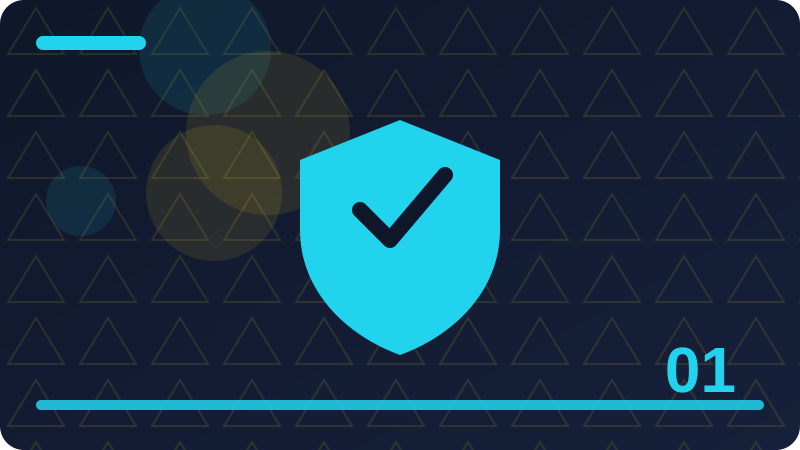

Chapter 1: Cyber Security and Your First Defence

Section 1: What Cyber Security Really Means
This section explains what cyber security really means in plain words, using everyday examples you can picture and steps you can actually try on your own devices and accounts. Information has value even when it does not look valuable. Your name, birthday, school, workplace, photos, and daily routine can help someone pretend to be you, guess your security answers, or write a convincing trick message. Attackers often collect small pieces from many places and join them together. That is why it helps to share less in public, to check what an app or website really needs before you give it details, and to treat personal information as something you lend carefully, not something you hand out freely. A threat is something that could cause harm, a vulnerability is a weakness that could be used, and risk is the combination of how likely harm is and how serious it would be. You do not need to memorise these words perfectly, but the ideas help you decide where to spend your effort. A weak password on an email account is a bigger risk than a weak password on a throwaway forum account, because email can reset many other accounts. Ranking risks this way keeps your work focused on what matters most. Defence in depth means using more than one protection, so that if one fails, another still stands. A strong password plus a second sign-in check is defence in depth. An updated phone plus a backup is defence in depth. This idea matters because every protection can fail sometimes: people forget, software has bugs, and tricks can be very convincing. Planning for failure is not pessimism; it is good design. When you build layers, a single mistake becomes an inconvenience instead of a disaster. Your devices hold far more than you see on the screen. A phone holds messages, photos, contacts, saved passwords, location history, and access to email and banking. A computer holds documents, browsing history, and accounts that stay signed in. Treating a device as a key ring helps: you would not leave your keys on a bus, and you should not leave a phone unlocked on a table. Screen locks, automatic locking, and knowing how to find or wipe a lost device are basic, powerful protections. A small habit repeated every day protects you far more than one big effort made only once in a while. When you are unsure about a message, a link, or a request, pausing before you act is always the safer choice. Write down what you changed and why, so you can check it later and help someone else understand your decision. Good security feels ordinary most of the time, because it is built from simple steps done in the right order. If a step feels rushed or secretive, treat that feeling as useful information and slow down before you continue. Share what you learn with family and friends, because a household that understands the basics is harder to trick.
Check: In your own words, explain what cyber security really means and give one everyday example of it in action.
Section 2: Why Ordinary People Are Targets
This section explains why ordinary people are targets in plain words, using everyday examples you can picture and steps you can actually try on your own devices and accounts. Your devices hold far more than you see on the screen. A phone holds messages, photos, contacts, saved passwords, location history, and access to email and banking. A computer holds documents, browsing history, and accounts that stay signed in. Treating a device as a key ring helps: you would not leave your keys on a bus, and you should not leave a phone unlocked on a table. Screen locks, automatic locking, and knowing how to find or wipe a lost device are basic, powerful protections. Software updates often feel annoying, but they are one of the simplest defences you have. Many updates fix security weaknesses that have already been discovered, and attackers know how to use old weaknesses quickly. When you delay an update, you leave a known door open. Turning on automatic updates for your operating system, browser, and important apps removes most of this work. If an update needs a restart, plan it for a quiet moment rather than ignoring it for weeks. Backups are copies of your important files kept somewhere safe, so that losing a device, a ransomware attack, or a simple mistake does not mean losing everything. A good backup is regular, automatic where possible, and tested: you should know how to get a file back before you actually need to. Keep at least one copy separate from your main device, for example on an external drive or a trusted cloud service. Backups do not stop attacks, but they sharply limit the damage an attack can do. Passwords, updates, and backups protect your accounts, but your own judgement protects you from tricks aimed directly at people. Attackers often do not break technology at all; they persuade a person to hand over a code, click a link, or open a file. Learning to pause, to check a sender through a separate channel, and to distrust urgent demands for secrecy or payment is a genuine security skill. It can be practised like any other skill, and it improves every time you stop and think before acting. A small habit repeated every day protects you far more than one big effort made only once in a while. When you are unsure about a message, a link, or a request, pausing before you act is always the safer choice. Write down what you changed and why, so you can check it later and help someone else understand your decision. Good security feels ordinary most of the time, because it is built from simple steps done in the right order. If a step feels rushed or secretive, treat that feeling as useful information and slow down before you continue. Share what you learn with family and friends, because a household that understands the basics is harder to trick. Check the result after you finish a task, rather than assuming everything worked exactly as you expected it to.
Check: In your own words, explain why ordinary people are targets and give one everyday example of it in action.
Section 3: Your First Layer of Defence
This section explains your first layer of defence in plain words, using everyday examples you can picture and steps you can actually try on your own devices and accounts. Passwords, updates, and backups protect your accounts, but your own judgement protects you from tricks aimed directly at people. Attackers often do not break technology at all; they persuade a person to hand over a code, click a link, or open a file. Learning to pause, to check a sender through a separate channel, and to distrust urgent demands for secrecy or payment is a genuine security skill. It can be practised like any other skill, and it improves every time you stop and think before acting. Security is also about responsibility to others. If your account is taken over, it can be used to trick your friends, your family, and your colleagues, because messages from you carry trust. Keeping your accounts safe therefore protects your community as well as yourself. The same applies at work: one careless click can affect a whole organisation. Seeing security as shared care, rather than only personal worry, makes the habits easier to keep and easier to explain to others. You do not need to become a security expert overnight, and you do not need perfect knowledge to be much safer than you were yesterday. Start with the biggest risks, fix one habit at a time, and build from there. This book follows that order: first the foundations, then passwords and sign-in checks, then tricks and scams, then devices, networks, and data, and finally testing, careers, and a real defensive project. Each chapter adds one clear layer, and each layer stays useful for the rest of your life online. Cyber security is the practice of protecting computers, phones, accounts, and information from harm, theft, and unwanted access. It is not only about hackers in films or complicated mathematics. It is mostly about ordinary decisions: which password you choose, whether you update your phone, and whether you pause before clicking a link. When you lock your front door at night, you are practising physical security. Cyber security is the same idea applied to your digital life, and it works best when the steps are simple, repeated, and understood by everyone in the household. A small habit repeated every day protects you far more than one big effort made only once in a while. When you are unsure about a message, a link, or a request, pausing before you act is always the safer choice. Write down what you changed and why, so you can check it later and help someone else understand your decision. Good security feels ordinary most of the time, because it is built from simple steps done in the right order. If a step feels rushed or secretive, treat that feeling as useful information and slow down before you continue. Share what you learn with family and friends, because a household that understands the basics is harder to trick.
Check: In your own words, explain your first layer of defence and give one everyday example of it in action.
Section 4: Why Your Information Has Value
This section explains why your information has value in plain words, using everyday examples you can picture and steps you can actually try on your own devices and accounts. Cyber security is the practice of protecting computers, phones, accounts, and information from harm, theft, and unwanted access. It is not only about hackers in films or complicated mathematics. It is mostly about ordinary decisions: which password you choose, whether you update your phone, and whether you pause before clicking a link. When you lock your front door at night, you are practising physical security. Cyber security is the same idea applied to your digital life, and it works best when the steps are simple, repeated, and understood by everyone in the household. An attacker is anyone who tries to reach your information or devices without permission, and an attack does not have to be personal to hurt you. Many attacks are automatic, scanning thousands of devices and accounts at once, looking for the easiest opening. That is why a small account can still be a target: it may hold a password that is reused elsewhere, a contact list that can be used to trick friends, or a device that can be used to send spam. Understanding this helps you see security as protection for yourself and for the people connected to you. Your first defence is not an expensive product. It is a set of habits: use strong, different passwords, turn on extra sign-in checks where they are offered, keep your software updated, and back up important files. Each habit closes a common door that attackers try. Together, they make an attack much harder and much less rewarding. Think of them as layers, like a locked door, a fence, and a watchful neighbour. No single layer is perfect, but several layers together give you real, practical protection. Information has value even when it does not look valuable. Your name, birthday, school, workplace, photos, and daily routine can help someone pretend to be you, guess your security answers, or write a convincing trick message. Attackers often collect small pieces from many places and join them together. That is why it helps to share less in public, to check what an app or website really needs before you give it details, and to treat personal information as something you lend carefully, not something you hand out freely. A small habit repeated every day protects you far more than one big effort made only once in a while. When you are unsure about a message, a link, or a request, pausing before you act is always the safer choice. Write down what you changed and why, so you can check it later and help someone else understand your decision. Good security feels ordinary most of the time, because it is built from simple steps done in the right order. If a step feels rushed or secretive, treat that feeling as useful information and slow down before you continue.
Check: In your own words, explain why your information has value and give one everyday example of it in action.
Section 5: Threats, Weaknesses and Risk in Plain Words
This section explains threats, weaknesses and risk in plain words in plain words, using everyday examples you can picture and steps you can actually try on your own devices and accounts. Information has value even when it does not look valuable. Your name, birthday, school, workplace, photos, and daily routine can help someone pretend to be you, guess your security answers, or write a convincing trick message. Attackers often collect small pieces from many places and join them together. That is why it helps to share less in public, to check what an app or website really needs before you give it details, and to treat personal information as something you lend carefully, not something you hand out freely. A threat is something that could cause harm, a vulnerability is a weakness that could be used, and risk is the combination of how likely harm is and how serious it would be. You do not need to memorise these words perfectly, but the ideas help you decide where to spend your effort. A weak password on an email account is a bigger risk than a weak password on a throwaway forum account, because email can reset many other accounts. Ranking risks this way keeps your work focused on what matters most. Defence in depth means using more than one protection, so that if one fails, another still stands. A strong password plus a second sign-in check is defence in depth. An updated phone plus a backup is defence in depth. This idea matters because every protection can fail sometimes: people forget, software has bugs, and tricks can be very convincing. Planning for failure is not pessimism; it is good design. When you build layers, a single mistake becomes an inconvenience instead of a disaster. Your devices hold far more than you see on the screen. A phone holds messages, photos, contacts, saved passwords, location history, and access to email and banking. A computer holds documents, browsing history, and accounts that stay signed in. Treating a device as a key ring helps: you would not leave your keys on a bus, and you should not leave a phone unlocked on a table. Screen locks, automatic locking, and knowing how to find or wipe a lost device are basic, powerful protections. A small habit repeated every day protects you far more than one big effort made only once in a while. When you are unsure about a message, a link, or a request, pausing before you act is always the safer choice. Write down what you changed and why, so you can check it later and help someone else understand your decision. Good security feels ordinary most of the time, because it is built from simple steps done in the right order. If a step feels rushed or secretive, treat that feeling as useful information and slow down before you continue. Share what you learn with family and friends, because a household that understands the basics is harder to trick.
def password_is_strong(password):
checks = {
'length_12_plus': len(password) >= 12,
'has_upper': any(c.isupper() for c in password),
'has_lower': any(c.islower() for c in password),
'has_digit': any(c.isdigit() for c in password),
'has_symbol': any(not c.isalnum() for c in password),
}
return checks
print(password_is_strong('Correct-Horse-Example-42!'))Check: In your own words, explain threats, weaknesses and risk in plain words and give one everyday example of it in action.
Section 6: Defence in Depth Explained Simply
This section explains defence in depth explained simply in plain words, using everyday examples you can picture and steps you can actually try on your own devices and accounts. Your devices hold far more than you see on the screen. A phone holds messages, photos, contacts, saved passwords, location history, and access to email and banking. A computer holds documents, browsing history, and accounts that stay signed in. Treating a device as a key ring helps: you would not leave your keys on a bus, and you should not leave a phone unlocked on a table. Screen locks, automatic locking, and knowing how to find or wipe a lost device are basic, powerful protections. Software updates often feel annoying, but they are one of the simplest defences you have. Many updates fix security weaknesses that have already been discovered, and attackers know how to use old weaknesses quickly. When you delay an update, you leave a known door open. Turning on automatic updates for your operating system, browser, and important apps removes most of this work. If an update needs a restart, plan it for a quiet moment rather than ignoring it for weeks. Backups are copies of your important files kept somewhere safe, so that losing a device, a ransomware attack, or a simple mistake does not mean losing everything. A good backup is regular, automatic where possible, and tested: you should know how to get a file back before you actually need to. Keep at least one copy separate from your main device, for example on an external drive or a trusted cloud service. Backups do not stop attacks, but they sharply limit the damage an attack can do. Passwords, updates, and backups protect your accounts, but your own judgement protects you from tricks aimed directly at people. Attackers often do not break technology at all; they persuade a person to hand over a code, click a link, or open a file. Learning to pause, to check a sender through a separate channel, and to distrust urgent demands for secrecy or payment is a genuine security skill. It can be practised like any other skill, and it improves every time you stop and think before acting. A small habit repeated every day protects you far more than one big effort made only once in a while. When you are unsure about a message, a link, or a request, pausing before you act is always the safer choice. Write down what you changed and why, so you can check it later and help someone else understand your decision. Good security feels ordinary most of the time, because it is built from simple steps done in the right order. If a step feels rushed or secretive, treat that feeling as useful information and slow down before you continue. Share what you learn with family and friends, because a household that understands the basics is harder to trick. Check the result after you finish a task, rather than assuming everything worked exactly as you expected it to.
Check: In your own words, explain defence in depth explained simply and give one everyday example of it in action.
Section 7: What Your Phone Really Holds
This section explains what your phone really holds in plain words, using everyday examples you can picture and steps you can actually try on your own devices and accounts. Passwords, updates, and backups protect your accounts, but your own judgement protects you from tricks aimed directly at people. Attackers often do not break technology at all; they persuade a person to hand over a code, click a link, or open a file. Learning to pause, to check a sender through a separate channel, and to distrust urgent demands for secrecy or payment is a genuine security skill. It can be practised like any other skill, and it improves every time you stop and think before acting. Security is also about responsibility to others. If your account is taken over, it can be used to trick your friends, your family, and your colleagues, because messages from you carry trust. Keeping your accounts safe therefore protects your community as well as yourself. The same applies at work: one careless click can affect a whole organisation. Seeing security as shared care, rather than only personal worry, makes the habits easier to keep and easier to explain to others. You do not need to become a security expert overnight, and you do not need perfect knowledge to be much safer than you were yesterday. Start with the biggest risks, fix one habit at a time, and build from there. This book follows that order: first the foundations, then passwords and sign-in checks, then tricks and scams, then devices, networks, and data, and finally testing, careers, and a real defensive project. Each chapter adds one clear layer, and each layer stays useful for the rest of your life online. Cyber security is the practice of protecting computers, phones, accounts, and information from harm, theft, and unwanted access. It is not only about hackers in films or complicated mathematics. It is mostly about ordinary decisions: which password you choose, whether you update your phone, and whether you pause before clicking a link. When you lock your front door at night, you are practising physical security. Cyber security is the same idea applied to your digital life, and it works best when the steps are simple, repeated, and understood by everyone in the household. A small habit repeated every day protects you far more than one big effort made only once in a while. When you are unsure about a message, a link, or a request, pausing before you act is always the safer choice. Write down what you changed and why, so you can check it later and help someone else understand your decision. Good security feels ordinary most of the time, because it is built from simple steps done in the right order. If a step feels rushed or secretive, treat that feeling as useful information and slow down before you continue. Share what you learn with family and friends, because a household that understands the basics is harder to trick.
Check: In your own words, explain what your phone really holds and give one everyday example of it in action.
Section 8: Why Updates Are a Security Tool
This section explains why updates are a security tool in plain words, using everyday examples you can picture and steps you can actually try on your own devices and accounts. Cyber security is the practice of protecting computers, phones, accounts, and information from harm, theft, and unwanted access. It is not only about hackers in films or complicated mathematics. It is mostly about ordinary decisions: which password you choose, whether you update your phone, and whether you pause before clicking a link. When you lock your front door at night, you are practising physical security. Cyber security is the same idea applied to your digital life, and it works best when the steps are simple, repeated, and understood by everyone in the household. An attacker is anyone who tries to reach your information or devices without permission, and an attack does not have to be personal to hurt you. Many attacks are automatic, scanning thousands of devices and accounts at once, looking for the easiest opening. That is why a small account can still be a target: it may hold a password that is reused elsewhere, a contact list that can be used to trick friends, or a device that can be used to send spam. Understanding this helps you see security as protection for yourself and for the people connected to you. Your first defence is not an expensive product. It is a set of habits: use strong, different passwords, turn on extra sign-in checks where they are offered, keep your software updated, and back up important files. Each habit closes a common door that attackers try. Together, they make an attack much harder and much less rewarding. Think of them as layers, like a locked door, a fence, and a watchful neighbour. No single layer is perfect, but several layers together give you real, practical protection. Information has value even when it does not look valuable. Your name, birthday, school, workplace, photos, and daily routine can help someone pretend to be you, guess your security answers, or write a convincing trick message. Attackers often collect small pieces from many places and join them together. That is why it helps to share less in public, to check what an app or website really needs before you give it details, and to treat personal information as something you lend carefully, not something you hand out freely. A small habit repeated every day protects you far more than one big effort made only once in a while. When you are unsure about a message, a link, or a request, pausing before you act is always the safer choice. Write down what you changed and why, so you can check it later and help someone else understand your decision. Good security feels ordinary most of the time, because it is built from simple steps done in the right order. If a step feels rushed or secretive, treat that feeling as useful information and slow down before you continue.
Check: In your own words, explain why updates are a security tool and give one everyday example of it in action.
Section 9: Backups: Your Safety Net
This section explains backups: your safety net in plain words, using everyday examples you can picture and steps you can actually try on your own devices and accounts. Information has value even when it does not look valuable. Your name, birthday, school, workplace, photos, and daily routine can help someone pretend to be you, guess your security answers, or write a convincing trick message. Attackers often collect small pieces from many places and join them together. That is why it helps to share less in public, to check what an app or website really needs before you give it details, and to treat personal information as something you lend carefully, not something you hand out freely. A threat is something that could cause harm, a vulnerability is a weakness that could be used, and risk is the combination of how likely harm is and how serious it would be. You do not need to memorise these words perfectly, but the ideas help you decide where to spend your effort. A weak password on an email account is a bigger risk than a weak password on a throwaway forum account, because email can reset many other accounts. Ranking risks this way keeps your work focused on what matters most. Defence in depth means using more than one protection, so that if one fails, another still stands. A strong password plus a second sign-in check is defence in depth. An updated phone plus a backup is defence in depth. This idea matters because every protection can fail sometimes: people forget, software has bugs, and tricks can be very convincing. Planning for failure is not pessimism; it is good design. When you build layers, a single mistake becomes an inconvenience instead of a disaster. Your devices hold far more than you see on the screen. A phone holds messages, photos, contacts, saved passwords, location history, and access to email and banking. A computer holds documents, browsing history, and accounts that stay signed in. Treating a device as a key ring helps: you would not leave your keys on a bus, and you should not leave a phone unlocked on a table. Screen locks, automatic locking, and knowing how to find or wipe a lost device are basic, powerful protections. A small habit repeated every day protects you far more than one big effort made only once in a while. When you are unsure about a message, a link, or a request, pausing before you act is always the safer choice. Write down what you changed and why, so you can check it later and help someone else understand your decision. Good security feels ordinary most of the time, because it is built from simple steps done in the right order. If a step feels rushed or secretive, treat that feeling as useful information and slow down before you continue. Share what you learn with family and friends, because a household that understands the basics is harder to trick.
Check: In your own words, explain backups: your safety net and give one everyday example of it in action.
Section 10: People Are Part of Security Too
This section explains people are part of security too in plain words, using everyday examples you can picture and steps you can actually try on your own devices and accounts. Your devices hold far more than you see on the screen. A phone holds messages, photos, contacts, saved passwords, location history, and access to email and banking. A computer holds documents, browsing history, and accounts that stay signed in. Treating a device as a key ring helps: you would not leave your keys on a bus, and you should not leave a phone unlocked on a table. Screen locks, automatic locking, and knowing how to find or wipe a lost device are basic, powerful protections. Software updates often feel annoying, but they are one of the simplest defences you have. Many updates fix security weaknesses that have already been discovered, and attackers know how to use old weaknesses quickly. When you delay an update, you leave a known door open. Turning on automatic updates for your operating system, browser, and important apps removes most of this work. If an update needs a restart, plan it for a quiet moment rather than ignoring it for weeks. Backups are copies of your important files kept somewhere safe, so that losing a device, a ransomware attack, or a simple mistake does not mean losing everything. A good backup is regular, automatic where possible, and tested: you should know how to get a file back before you actually need to. Keep at least one copy separate from your main device, for example on an external drive or a trusted cloud service. Backups do not stop attacks, but they sharply limit the damage an attack can do. Passwords, updates, and backups protect your accounts, but your own judgement protects you from tricks aimed directly at people. Attackers often do not break technology at all; they persuade a person to hand over a code, click a link, or open a file. Learning to pause, to check a sender through a separate channel, and to distrust urgent demands for secrecy or payment is a genuine security skill. It can be practised like any other skill, and it improves every time you stop and think before acting. A small habit repeated every day protects you far more than one big effort made only once in a while. When you are unsure about a message, a link, or a request, pausing before you act is always the safer choice. Write down what you changed and why, so you can check it later and help someone else understand your decision. Good security feels ordinary most of the time, because it is built from simple steps done in the right order. If a step feels rushed or secretive, treat that feeling as useful information and slow down before you continue. Share what you learn with family and friends, because a household that understands the basics is harder to trick. Check the result after you finish a task, rather than assuming everything worked exactly as you expected it to.
Check: In your own words, explain people are part of security too and give one everyday example of it in action.
Section 11: Security as Care for Others
This section explains security as care for others in plain words, using everyday examples you can picture and steps you can actually try on your own devices and accounts. Passwords, updates, and backups protect your accounts, but your own judgement protects you from tricks aimed directly at people. Attackers often do not break technology at all; they persuade a person to hand over a code, click a link, or open a file. Learning to pause, to check a sender through a separate channel, and to distrust urgent demands for secrecy or payment is a genuine security skill. It can be practised like any other skill, and it improves every time you stop and think before acting. Security is also about responsibility to others. If your account is taken over, it can be used to trick your friends, your family, and your colleagues, because messages from you carry trust. Keeping your accounts safe therefore protects your community as well as yourself. The same applies at work: one careless click can affect a whole organisation. Seeing security as shared care, rather than only personal worry, makes the habits easier to keep and easier to explain to others. You do not need to become a security expert overnight, and you do not need perfect knowledge to be much safer than you were yesterday. Start with the biggest risks, fix one habit at a time, and build from there. This book follows that order: first the foundations, then passwords and sign-in checks, then tricks and scams, then devices, networks, and data, and finally testing, careers, and a real defensive project. Each chapter adds one clear layer, and each layer stays useful for the rest of your life online. Cyber security is the practice of protecting computers, phones, accounts, and information from harm, theft, and unwanted access. It is not only about hackers in films or complicated mathematics. It is mostly about ordinary decisions: which password you choose, whether you update your phone, and whether you pause before clicking a link. When you lock your front door at night, you are practising physical security. Cyber security is the same idea applied to your digital life, and it works best when the steps are simple, repeated, and understood by everyone in the household. A small habit repeated every day protects you far more than one big effort made only once in a while. When you are unsure about a message, a link, or a request, pausing before you act is always the safer choice. Write down what you changed and why, so you can check it later and help someone else understand your decision. Good security feels ordinary most of the time, because it is built from simple steps done in the right order. If a step feels rushed or secretive, treat that feeling as useful information and slow down before you continue. Share what you learn with family and friends, because a household that understands the basics is harder to trick.
Check: In your own words, explain security as care for others and give one everyday example of it in action.
Section 12: Starting Small and Building Up
This section explains starting small and building up in plain words, using everyday examples you can picture and steps you can actually try on your own devices and accounts. Cyber security is the practice of protecting computers, phones, accounts, and information from harm, theft, and unwanted access. It is not only about hackers in films or complicated mathematics. It is mostly about ordinary decisions: which password you choose, whether you update your phone, and whether you pause before clicking a link. When you lock your front door at night, you are practising physical security. Cyber security is the same idea applied to your digital life, and it works best when the steps are simple, repeated, and understood by everyone in the household. An attacker is anyone who tries to reach your information or devices without permission, and an attack does not have to be personal to hurt you. Many attacks are automatic, scanning thousands of devices and accounts at once, looking for the easiest opening. That is why a small account can still be a target: it may hold a password that is reused elsewhere, a contact list that can be used to trick friends, or a device that can be used to send spam. Understanding this helps you see security as protection for yourself and for the people connected to you. Your first defence is not an expensive product. It is a set of habits: use strong, different passwords, turn on extra sign-in checks where they are offered, keep your software updated, and back up important files. Each habit closes a common door that attackers try. Together, they make an attack much harder and much less rewarding. Think of them as layers, like a locked door, a fence, and a watchful neighbour. No single layer is perfect, but several layers together give you real, practical protection. Information has value even when it does not look valuable. Your name, birthday, school, workplace, photos, and daily routine can help someone pretend to be you, guess your security answers, or write a convincing trick message. Attackers often collect small pieces from many places and join them together. That is why it helps to share less in public, to check what an app or website really needs before you give it details, and to treat personal information as something you lend carefully, not something you hand out freely. A small habit repeated every day protects you far more than one big effort made only once in a while. When you are unsure about a message, a link, or a request, pausing before you act is always the safer choice. Write down what you changed and why, so you can check it later and help someone else understand your decision. Good security feels ordinary most of the time, because it is built from simple steps done in the right order. If a step feels rushed or secretive, treat that feeling as useful information and slow down before you continue.
Check: In your own words, explain starting small and building up and give one everyday example of it in action.
Section 13: Accounts: The Keys to Your Digital Life
This section explains accounts: the keys to your digital life in plain words, using everyday examples you can picture and steps you can actually try on your own devices and accounts. Information has value even when it does not look valuable. Your name, birthday, school, workplace, photos, and daily routine can help someone pretend to be you, guess your security answers, or write a convincing trick message. Attackers often collect small pieces from many places and join them together. That is why it helps to share less in public, to check what an app or website really needs before you give it details, and to treat personal information as something you lend carefully, not something you hand out freely. A threat is something that could cause harm, a vulnerability is a weakness that could be used, and risk is the combination of how likely harm is and how serious it would be. You do not need to memorise these words perfectly, but the ideas help you decide where to spend your effort. A weak password on an email account is a bigger risk than a weak password on a throwaway forum account, because email can reset many other accounts. Ranking risks this way keeps your work focused on what matters most. Defence in depth means using more than one protection, so that if one fails, another still stands. A strong password plus a second sign-in check is defence in depth. An updated phone plus a backup is defence in depth. This idea matters because every protection can fail sometimes: people forget, software has bugs, and tricks can be very convincing. Planning for failure is not pessimism; it is good design. When you build layers, a single mistake becomes an inconvenience instead of a disaster. Your devices hold far more than you see on the screen. A phone holds messages, photos, contacts, saved passwords, location history, and access to email and banking. A computer holds documents, browsing history, and accounts that stay signed in. Treating a device as a key ring helps: you would not leave your keys on a bus, and you should not leave a phone unlocked on a table. Screen locks, automatic locking, and knowing how to find or wipe a lost device are basic, powerful protections. A small habit repeated every day protects you far more than one big effort made only once in a while. When you are unsure about a message, a link, or a request, pausing before you act is always the safer choice. Write down what you changed and why, so you can check it later and help someone else understand your decision. Good security feels ordinary most of the time, because it is built from simple steps done in the right order. If a step feels rushed or secretive, treat that feeling as useful information and slow down before you continue. Share what you learn with family and friends, because a household that understands the basics is harder to trick.
Check: In your own words, explain accounts: the keys to your digital life and give one everyday example of it in action.
Section 14: Locking Your Screen Properly
This section explains locking your screen properly in plain words, using everyday examples you can picture and steps you can actually try on your own devices and accounts. Your devices hold far more than you see on the screen. A phone holds messages, photos, contacts, saved passwords, location history, and access to email and banking. A computer holds documents, browsing history, and accounts that stay signed in. Treating a device as a key ring helps: you would not leave your keys on a bus, and you should not leave a phone unlocked on a table. Screen locks, automatic locking, and knowing how to find or wipe a lost device are basic, powerful protections. Software updates often feel annoying, but they are one of the simplest defences you have. Many updates fix security weaknesses that have already been discovered, and attackers know how to use old weaknesses quickly. When you delay an update, you leave a known door open. Turning on automatic updates for your operating system, browser, and important apps removes most of this work. If an update needs a restart, plan it for a quiet moment rather than ignoring it for weeks. Backups are copies of your important files kept somewhere safe, so that losing a device, a ransomware attack, or a simple mistake does not mean losing everything. A good backup is regular, automatic where possible, and tested: you should know how to get a file back before you actually need to. Keep at least one copy separate from your main device, for example on an external drive or a trusted cloud service. Backups do not stop attacks, but they sharply limit the damage an attack can do. Passwords, updates, and backups protect your accounts, but your own judgement protects you from tricks aimed directly at people. Attackers often do not break technology at all; they persuade a person to hand over a code, click a link, or open a file. Learning to pause, to check a sender through a separate channel, and to distrust urgent demands for secrecy or payment is a genuine security skill. It can be practised like any other skill, and it improves every time you stop and think before acting. A small habit repeated every day protects you far more than one big effort made only once in a while. When you are unsure about a message, a link, or a request, pausing before you act is always the safer choice. Write down what you changed and why, so you can check it later and help someone else understand your decision. Good security feels ordinary most of the time, because it is built from simple steps done in the right order. If a step feels rushed or secretive, treat that feeling as useful information and slow down before you continue. Share what you learn with family and friends, because a household that understands the basics is harder to trick. Check the result after you finish a task, rather than assuming everything worked exactly as you expected it to.
Check: In your own words, explain locking your screen properly and give one everyday example of it in action.
Section 15: What Happens When an Account Is Taken Over
This section explains what happens when an account is taken over in plain words, using everyday examples you can picture and steps you can actually try on your own devices and accounts. Passwords, updates, and backups protect your accounts, but your own judgement protects you from tricks aimed directly at people. Attackers often do not break technology at all; they persuade a person to hand over a code, click a link, or open a file. Learning to pause, to check a sender through a separate channel, and to distrust urgent demands for secrecy or payment is a genuine security skill. It can be practised like any other skill, and it improves every time you stop and think before acting. Security is also about responsibility to others. If your account is taken over, it can be used to trick your friends, your family, and your colleagues, because messages from you carry trust. Keeping your accounts safe therefore protects your community as well as yourself. The same applies at work: one careless click can affect a whole organisation. Seeing security as shared care, rather than only personal worry, makes the habits easier to keep and easier to explain to others. You do not need to become a security expert overnight, and you do not need perfect knowledge to be much safer than you were yesterday. Start with the biggest risks, fix one habit at a time, and build from there. This book follows that order: first the foundations, then passwords and sign-in checks, then tricks and scams, then devices, networks, and data, and finally testing, careers, and a real defensive project. Each chapter adds one clear layer, and each layer stays useful for the rest of your life online. Cyber security is the practice of protecting computers, phones, accounts, and information from harm, theft, and unwanted access. It is not only about hackers in films or complicated mathematics. It is mostly about ordinary decisions: which password you choose, whether you update your phone, and whether you pause before clicking a link. When you lock your front door at night, you are practising physical security. Cyber security is the same idea applied to your digital life, and it works best when the steps are simple, repeated, and understood by everyone in the household. A small habit repeated every day protects you far more than one big effort made only once in a while. When you are unsure about a message, a link, or a request, pausing before you act is always the safer choice. Write down what you changed and why, so you can check it later and help someone else understand your decision. Good security feels ordinary most of the time, because it is built from simple steps done in the right order. If a step feels rushed or secretive, treat that feeling as useful information and slow down before you continue. Share what you learn with family and friends, because a household that understands the basics is harder to trick.
import os
def home_files_are_private(folder):
for name in os.listdir(folder):
path = os.path.join(folder, name)
print(name, oct(os.stat(path).st_mode)[-3:])
# Run this only on your own folders.
home_files_are_private(os.path.expanduser('~'))Check: In your own words, explain what happens when an account is taken over and give one everyday example of it in action.
Section 16: Safe Habits for Every Day
This section explains safe habits for every day in plain words, using everyday examples you can picture and steps you can actually try on your own devices and accounts. Cyber security is the practice of protecting computers, phones, accounts, and information from harm, theft, and unwanted access. It is not only about hackers in films or complicated mathematics. It is mostly about ordinary decisions: which password you choose, whether you update your phone, and whether you pause before clicking a link. When you lock your front door at night, you are practising physical security. Cyber security is the same idea applied to your digital life, and it works best when the steps are simple, repeated, and understood by everyone in the household. An attacker is anyone who tries to reach your information or devices without permission, and an attack does not have to be personal to hurt you. Many attacks are automatic, scanning thousands of devices and accounts at once, looking for the easiest opening. That is why a small account can still be a target: it may hold a password that is reused elsewhere, a contact list that can be used to trick friends, or a device that can be used to send spam. Understanding this helps you see security as protection for yourself and for the people connected to you. Your first defence is not an expensive product. It is a set of habits: use strong, different passwords, turn on extra sign-in checks where they are offered, keep your software updated, and back up important files. Each habit closes a common door that attackers try. Together, they make an attack much harder and much less rewarding. Think of them as layers, like a locked door, a fence, and a watchful neighbour. No single layer is perfect, but several layers together give you real, practical protection. Information has value even when it does not look valuable. Your name, birthday, school, workplace, photos, and daily routine can help someone pretend to be you, guess your security answers, or write a convincing trick message. Attackers often collect small pieces from many places and join them together. That is why it helps to share less in public, to check what an app or website really needs before you give it details, and to treat personal information as something you lend carefully, not something you hand out freely. A small habit repeated every day protects you far more than one big effort made only once in a while. When you are unsure about a message, a link, or a request, pausing before you act is always the safer choice. Write down what you changed and why, so you can check it later and help someone else understand your decision. Good security feels ordinary most of the time, because it is built from simple steps done in the right order. If a step feels rushed or secretive, treat that feeling as useful information and slow down before you continue.
Check: In your own words, explain safe habits for every day and give one everyday example of it in action.
Section 17: Choosing What to Share Online
This section explains choosing what to share online in plain words, using everyday examples you can picture and steps you can actually try on your own devices and accounts. Information has value even when it does not look valuable. Your name, birthday, school, workplace, photos, and daily routine can help someone pretend to be you, guess your security answers, or write a convincing trick message. Attackers often collect small pieces from many places and join them together. That is why it helps to share less in public, to check what an app or website really needs before you give it details, and to treat personal information as something you lend carefully, not something you hand out freely. A threat is something that could cause harm, a vulnerability is a weakness that could be used, and risk is the combination of how likely harm is and how serious it would be. You do not need to memorise these words perfectly, but the ideas help you decide where to spend your effort. A weak password on an email account is a bigger risk than a weak password on a throwaway forum account, because email can reset many other accounts. Ranking risks this way keeps your work focused on what matters most. Defence in depth means using more than one protection, so that if one fails, another still stands. A strong password plus a second sign-in check is defence in depth. An updated phone plus a backup is defence in depth. This idea matters because every protection can fail sometimes: people forget, software has bugs, and tricks can be very convincing. Planning for failure is not pessimism; it is good design. When you build layers, a single mistake becomes an inconvenience instead of a disaster. Your devices hold far more than you see on the screen. A phone holds messages, photos, contacts, saved passwords, location history, and access to email and banking. A computer holds documents, browsing history, and accounts that stay signed in. Treating a device as a key ring helps: you would not leave your keys on a bus, and you should not leave a phone unlocked on a table. Screen locks, automatic locking, and knowing how to find or wipe a lost device are basic, powerful protections. A small habit repeated every day protects you far more than one big effort made only once in a while. When you are unsure about a message, a link, or a request, pausing before you act is always the safer choice. Write down what you changed and why, so you can check it later and help someone else understand your decision. Good security feels ordinary most of the time, because it is built from simple steps done in the right order. If a step feels rushed or secretive, treat that feeling as useful information and slow down before you continue. Share what you learn with family and friends, because a household that understands the basics is harder to trick.
Check: In your own words, explain choosing what to share online and give one everyday example of it in action.
Section 18: Public and Private Information
This section explains public and private information in plain words, using everyday examples you can picture and steps you can actually try on your own devices and accounts. Your devices hold far more than you see on the screen. A phone holds messages, photos, contacts, saved passwords, location history, and access to email and banking. A computer holds documents, browsing history, and accounts that stay signed in. Treating a device as a key ring helps: you would not leave your keys on a bus, and you should not leave a phone unlocked on a table. Screen locks, automatic locking, and knowing how to find or wipe a lost device are basic, powerful protections. Software updates often feel annoying, but they are one of the simplest defences you have. Many updates fix security weaknesses that have already been discovered, and attackers know how to use old weaknesses quickly. When you delay an update, you leave a known door open. Turning on automatic updates for your operating system, browser, and important apps removes most of this work. If an update needs a restart, plan it for a quiet moment rather than ignoring it for weeks. Backups are copies of your important files kept somewhere safe, so that losing a device, a ransomware attack, or a simple mistake does not mean losing everything. A good backup is regular, automatic where possible, and tested: you should know how to get a file back before you actually need to. Keep at least one copy separate from your main device, for example on an external drive or a trusted cloud service. Backups do not stop attacks, but they sharply limit the damage an attack can do. Passwords, updates, and backups protect your accounts, but your own judgement protects you from tricks aimed directly at people. Attackers often do not break technology at all; they persuade a person to hand over a code, click a link, or open a file. Learning to pause, to check a sender through a separate channel, and to distrust urgent demands for secrecy or payment is a genuine security skill. It can be practised like any other skill, and it improves every time you stop and think before acting. A small habit repeated every day protects you far more than one big effort made only once in a while. When you are unsure about a message, a link, or a request, pausing before you act is always the safer choice. Write down what you changed and why, so you can check it later and help someone else understand your decision. Good security feels ordinary most of the time, because it is built from simple steps done in the right order. If a step feels rushed or secretive, treat that feeling as useful information and slow down before you continue. Share what you learn with family and friends, because a household that understands the basics is harder to trick. Check the result after you finish a task, rather than assuming everything worked exactly as you expected it to.
Check: In your own words, explain public and private information and give one everyday example of it in action.
Section 19: The Cost of a Security Mistake
This section explains the cost of a security mistake in plain words, using everyday examples you can picture and steps you can actually try on your own devices and accounts. Passwords, updates, and backups protect your accounts, but your own judgement protects you from tricks aimed directly at people. Attackers often do not break technology at all; they persuade a person to hand over a code, click a link, or open a file. Learning to pause, to check a sender through a separate channel, and to distrust urgent demands for secrecy or payment is a genuine security skill. It can be practised like any other skill, and it improves every time you stop and think before acting. Security is also about responsibility to others. If your account is taken over, it can be used to trick your friends, your family, and your colleagues, because messages from you carry trust. Keeping your accounts safe therefore protects your community as well as yourself. The same applies at work: one careless click can affect a whole organisation. Seeing security as shared care, rather than only personal worry, makes the habits easier to keep and easier to explain to others. You do not need to become a security expert overnight, and you do not need perfect knowledge to be much safer than you were yesterday. Start with the biggest risks, fix one habit at a time, and build from there. This book follows that order: first the foundations, then passwords and sign-in checks, then tricks and scams, then devices, networks, and data, and finally testing, careers, and a real defensive project. Each chapter adds one clear layer, and each layer stays useful for the rest of your life online. Cyber security is the practice of protecting computers, phones, accounts, and information from harm, theft, and unwanted access. It is not only about hackers in films or complicated mathematics. It is mostly about ordinary decisions: which password you choose, whether you update your phone, and whether you pause before clicking a link. When you lock your front door at night, you are practising physical security. Cyber security is the same idea applied to your digital life, and it works best when the steps are simple, repeated, and understood by everyone in the household. A small habit repeated every day protects you far more than one big effort made only once in a while. When you are unsure about a message, a link, or a request, pausing before you act is always the safer choice. Write down what you changed and why, so you can check it later and help someone else understand your decision. Good security feels ordinary most of the time, because it is built from simple steps done in the right order. If a step feels rushed or secretive, treat that feeling as useful information and slow down before you continue. Share what you learn with family and friends, because a household that understands the basics is harder to trick.
Check: In your own words, explain the cost of a security mistake and give one everyday example of it in action.
Section 20: How Attackers Find Easy Targets
This section explains how attackers find easy targets in plain words, using everyday examples you can picture and steps you can actually try on your own devices and accounts. Cyber security is the practice of protecting computers, phones, accounts, and information from harm, theft, and unwanted access. It is not only about hackers in films or complicated mathematics. It is mostly about ordinary decisions: which password you choose, whether you update your phone, and whether you pause before clicking a link. When you lock your front door at night, you are practising physical security. Cyber security is the same idea applied to your digital life, and it works best when the steps are simple, repeated, and understood by everyone in the household. An attacker is anyone who tries to reach your information or devices without permission, and an attack does not have to be personal to hurt you. Many attacks are automatic, scanning thousands of devices and accounts at once, looking for the easiest opening. That is why a small account can still be a target: it may hold a password that is reused elsewhere, a contact list that can be used to trick friends, or a device that can be used to send spam. Understanding this helps you see security as protection for yourself and for the people connected to you. Your first defence is not an expensive product. It is a set of habits: use strong, different passwords, turn on extra sign-in checks where they are offered, keep your software updated, and back up important files. Each habit closes a common door that attackers try. Together, they make an attack much harder and much less rewarding. Think of them as layers, like a locked door, a fence, and a watchful neighbour. No single layer is perfect, but several layers together give you real, practical protection. Information has value even when it does not look valuable. Your name, birthday, school, workplace, photos, and daily routine can help someone pretend to be you, guess your security answers, or write a convincing trick message. Attackers often collect small pieces from many places and join them together. That is why it helps to share less in public, to check what an app or website really needs before you give it details, and to treat personal information as something you lend carefully, not something you hand out freely. A small habit repeated every day protects you far more than one big effort made only once in a while. When you are unsure about a message, a link, or a request, pausing before you act is always the safer choice. Write down what you changed and why, so you can check it later and help someone else understand your decision. Good security feels ordinary most of the time, because it is built from simple steps done in the right order. If a step feels rushed or secretive, treat that feeling as useful information and slow down before you continue.
Check: In your own words, explain how attackers find easy targets and give one everyday example of it in action.
Section 21: Strong Foundations Before Fancy Tools
This section explains strong foundations before fancy tools in plain words, using everyday examples you can picture and steps you can actually try on your own devices and accounts. Information has value even when it does not look valuable. Your name, birthday, school, workplace, photos, and daily routine can help someone pretend to be you, guess your security answers, or write a convincing trick message. Attackers often collect small pieces from many places and join them together. That is why it helps to share less in public, to check what an app or website really needs before you give it details, and to treat personal information as something you lend carefully, not something you hand out freely. A threat is something that could cause harm, a vulnerability is a weakness that could be used, and risk is the combination of how likely harm is and how serious it would be. You do not need to memorise these words perfectly, but the ideas help you decide where to spend your effort. A weak password on an email account is a bigger risk than a weak password on a throwaway forum account, because email can reset many other accounts. Ranking risks this way keeps your work focused on what matters most. Defence in depth means using more than one protection, so that if one fails, another still stands. A strong password plus a second sign-in check is defence in depth. An updated phone plus a backup is defence in depth. This idea matters because every protection can fail sometimes: people forget, software has bugs, and tricks can be very convincing. Planning for failure is not pessimism; it is good design. When you build layers, a single mistake becomes an inconvenience instead of a disaster. Your devices hold far more than you see on the screen. A phone holds messages, photos, contacts, saved passwords, location history, and access to email and banking. A computer holds documents, browsing history, and accounts that stay signed in. Treating a device as a key ring helps: you would not leave your keys on a bus, and you should not leave a phone unlocked on a table. Screen locks, automatic locking, and knowing how to find or wipe a lost device are basic, powerful protections. A small habit repeated every day protects you far more than one big effort made only once in a while. When you are unsure about a message, a link, or a request, pausing before you act is always the safer choice. Write down what you changed and why, so you can check it later and help someone else understand your decision. Good security feels ordinary most of the time, because it is built from simple steps done in the right order. If a step feels rushed or secretive, treat that feeling as useful information and slow down before you continue. Share what you learn with family and friends, because a household that understands the basics is harder to trick.
Check: In your own words, explain strong foundations before fancy tools and give one everyday example of it in action.
Section 22: Keeping Calm When Something Looks Wrong
This section explains keeping calm when something looks wrong in plain words, using everyday examples you can picture and steps you can actually try on your own devices and accounts. Your devices hold far more than you see on the screen. A phone holds messages, photos, contacts, saved passwords, location history, and access to email and banking. A computer holds documents, browsing history, and accounts that stay signed in. Treating a device as a key ring helps: you would not leave your keys on a bus, and you should not leave a phone unlocked on a table. Screen locks, automatic locking, and knowing how to find or wipe a lost device are basic, powerful protections. Software updates often feel annoying, but they are one of the simplest defences you have. Many updates fix security weaknesses that have already been discovered, and attackers know how to use old weaknesses quickly. When you delay an update, you leave a known door open. Turning on automatic updates for your operating system, browser, and important apps removes most of this work. If an update needs a restart, plan it for a quiet moment rather than ignoring it for weeks. Backups are copies of your important files kept somewhere safe, so that losing a device, a ransomware attack, or a simple mistake does not mean losing everything. A good backup is regular, automatic where possible, and tested: you should know how to get a file back before you actually need to. Keep at least one copy separate from your main device, for example on an external drive or a trusted cloud service. Backups do not stop attacks, but they sharply limit the damage an attack can do. Passwords, updates, and backups protect your accounts, but your own judgement protects you from tricks aimed directly at people. Attackers often do not break technology at all; they persuade a person to hand over a code, click a link, or open a file. Learning to pause, to check a sender through a separate channel, and to distrust urgent demands for secrecy or payment is a genuine security skill. It can be practised like any other skill, and it improves every time you stop and think before acting. A small habit repeated every day protects you far more than one big effort made only once in a while. When you are unsure about a message, a link, or a request, pausing before you act is always the safer choice. Write down what you changed and why, so you can check it later and help someone else understand your decision. Good security feels ordinary most of the time, because it is built from simple steps done in the right order. If a step feels rushed or secretive, treat that feeling as useful information and slow down before you continue. Share what you learn with family and friends, because a household that understands the basics is harder to trick. Check the result after you finish a task, rather than assuming everything worked exactly as you expected it to.
Check: In your own words, explain keeping calm when something looks wrong and give one everyday example of it in action.
Section 23: Asking for Help the Right Way
This section explains asking for help the right way in plain words, using everyday examples you can picture and steps you can actually try on your own devices and accounts. Passwords, updates, and backups protect your accounts, but your own judgement protects you from tricks aimed directly at people. Attackers often do not break technology at all; they persuade a person to hand over a code, click a link, or open a file. Learning to pause, to check a sender through a separate channel, and to distrust urgent demands for secrecy or payment is a genuine security skill. It can be practised like any other skill, and it improves every time you stop and think before acting. Security is also about responsibility to others. If your account is taken over, it can be used to trick your friends, your family, and your colleagues, because messages from you carry trust. Keeping your accounts safe therefore protects your community as well as yourself. The same applies at work: one careless click can affect a whole organisation. Seeing security as shared care, rather than only personal worry, makes the habits easier to keep and easier to explain to others. You do not need to become a security expert overnight, and you do not need perfect knowledge to be much safer than you were yesterday. Start with the biggest risks, fix one habit at a time, and build from there. This book follows that order: first the foundations, then passwords and sign-in checks, then tricks and scams, then devices, networks, and data, and finally testing, careers, and a real defensive project. Each chapter adds one clear layer, and each layer stays useful for the rest of your life online. Cyber security is the practice of protecting computers, phones, accounts, and information from harm, theft, and unwanted access. It is not only about hackers in films or complicated mathematics. It is mostly about ordinary decisions: which password you choose, whether you update your phone, and whether you pause before clicking a link. When you lock your front door at night, you are practising physical security. Cyber security is the same idea applied to your digital life, and it works best when the steps are simple, repeated, and understood by everyone in the household. A small habit repeated every day protects you far more than one big effort made only once in a while. When you are unsure about a message, a link, or a request, pausing before you act is always the safer choice. Write down what you changed and why, so you can check it later and help someone else understand your decision. Good security feels ordinary most of the time, because it is built from simple steps done in the right order. If a step feels rushed or secretive, treat that feeling as useful information and slow down before you continue. Share what you learn with family and friends, because a household that understands the basics is harder to trick.
Check: In your own words, explain asking for help the right way and give one everyday example of it in action.
Section 24: Trusted Sources for Security Advice
This section explains trusted sources for security advice in plain words, using everyday examples you can picture and steps you can actually try on your own devices and accounts. Cyber security is the practice of protecting computers, phones, accounts, and information from harm, theft, and unwanted access. It is not only about hackers in films or complicated mathematics. It is mostly about ordinary decisions: which password you choose, whether you update your phone, and whether you pause before clicking a link. When you lock your front door at night, you are practising physical security. Cyber security is the same idea applied to your digital life, and it works best when the steps are simple, repeated, and understood by everyone in the household. An attacker is anyone who tries to reach your information or devices without permission, and an attack does not have to be personal to hurt you. Many attacks are automatic, scanning thousands of devices and accounts at once, looking for the easiest opening. That is why a small account can still be a target: it may hold a password that is reused elsewhere, a contact list that can be used to trick friends, or a device that can be used to send spam. Understanding this helps you see security as protection for yourself and for the people connected to you. Your first defence is not an expensive product. It is a set of habits: use strong, different passwords, turn on extra sign-in checks where they are offered, keep your software updated, and back up important files. Each habit closes a common door that attackers try. Together, they make an attack much harder and much less rewarding. Think of them as layers, like a locked door, a fence, and a watchful neighbour. No single layer is perfect, but several layers together give you real, practical protection. Information has value even when it does not look valuable. Your name, birthday, school, workplace, photos, and daily routine can help someone pretend to be you, guess your security answers, or write a convincing trick message. Attackers often collect small pieces from many places and join them together. That is why it helps to share less in public, to check what an app or website really needs before you give it details, and to treat personal information as something you lend carefully, not something you hand out freely. A small habit repeated every day protects you far more than one big effort made only once in a while. When you are unsure about a message, a link, or a request, pausing before you act is always the safer choice. Write down what you changed and why, so you can check it later and help someone else understand your decision. Good security feels ordinary most of the time, because it is built from simple steps done in the right order. If a step feels rushed or secretive, treat that feeling as useful information and slow down before you continue.
Check: In your own words, explain trusted sources for security advice and give one everyday example of it in action.
Section 25: Checking Your Own Security Health
This section explains checking your own security health in plain words, using everyday examples you can picture and steps you can actually try on your own devices and accounts. Information has value even when it does not look valuable. Your name, birthday, school, workplace, photos, and daily routine can help someone pretend to be you, guess your security answers, or write a convincing trick message. Attackers often collect small pieces from many places and join them together. That is why it helps to share less in public, to check what an app or website really needs before you give it details, and to treat personal information as something you lend carefully, not something you hand out freely. A threat is something that could cause harm, a vulnerability is a weakness that could be used, and risk is the combination of how likely harm is and how serious it would be. You do not need to memorise these words perfectly, but the ideas help you decide where to spend your effort. A weak password on an email account is a bigger risk than a weak password on a throwaway forum account, because email can reset many other accounts. Ranking risks this way keeps your work focused on what matters most. Defence in depth means using more than one protection, so that if one fails, another still stands. A strong password plus a second sign-in check is defence in depth. An updated phone plus a backup is defence in depth. This idea matters because every protection can fail sometimes: people forget, software has bugs, and tricks can be very convincing. Planning for failure is not pessimism; it is good design. When you build layers, a single mistake becomes an inconvenience instead of a disaster. Your devices hold far more than you see on the screen. A phone holds messages, photos, contacts, saved passwords, location history, and access to email and banking. A computer holds documents, browsing history, and accounts that stay signed in. Treating a device as a key ring helps: you would not leave your keys on a bus, and you should not leave a phone unlocked on a table. Screen locks, automatic locking, and knowing how to find or wipe a lost device are basic, powerful protections. A small habit repeated every day protects you far more than one big effort made only once in a while. When you are unsure about a message, a link, or a request, pausing before you act is always the safer choice. Write down what you changed and why, so you can check it later and help someone else understand your decision. Good security feels ordinary most of the time, because it is built from simple steps done in the right order. If a step feels rushed or secretive, treat that feeling as useful information and slow down before you continue. Share what you learn with family and friends, because a household that understands the basics is harder to trick.
def backup_checklist():
items = ['Important files copied', 'Copy stored separately', 'Restore tested once']
for item in items:
print('[ ]', item)
backup_checklist()Check: In your own words, explain checking your own security health and give one everyday example of it in action.
Section 26: A Simple Weekly Security Routine
This section explains a simple weekly security routine in plain words, using everyday examples you can picture and steps you can actually try on your own devices and accounts. Your devices hold far more than you see on the screen. A phone holds messages, photos, contacts, saved passwords, location history, and access to email and banking. A computer holds documents, browsing history, and accounts that stay signed in. Treating a device as a key ring helps: you would not leave your keys on a bus, and you should not leave a phone unlocked on a table. Screen locks, automatic locking, and knowing how to find or wipe a lost device are basic, powerful protections. Software updates often feel annoying, but they are one of the simplest defences you have. Many updates fix security weaknesses that have already been discovered, and attackers know how to use old weaknesses quickly. When you delay an update, you leave a known door open. Turning on automatic updates for your operating system, browser, and important apps removes most of this work. If an update needs a restart, plan it for a quiet moment rather than ignoring it for weeks. Backups are copies of your important files kept somewhere safe, so that losing a device, a ransomware attack, or a simple mistake does not mean losing everything. A good backup is regular, automatic where possible, and tested: you should know how to get a file back before you actually need to. Keep at least one copy separate from your main device, for example on an external drive or a trusted cloud service. Backups do not stop attacks, but they sharply limit the damage an attack can do. Passwords, updates, and backups protect your accounts, but your own judgement protects you from tricks aimed directly at people. Attackers often do not break technology at all; they persuade a person to hand over a code, click a link, or open a file. Learning to pause, to check a sender through a separate channel, and to distrust urgent demands for secrecy or payment is a genuine security skill. It can be practised like any other skill, and it improves every time you stop and think before acting. A small habit repeated every day protects you far more than one big effort made only once in a while. When you are unsure about a message, a link, or a request, pausing before you act is always the safer choice. Write down what you changed and why, so you can check it later and help someone else understand your decision. Good security feels ordinary most of the time, because it is built from simple steps done in the right order. If a step feels rushed or secretive, treat that feeling as useful information and slow down before you continue. Share what you learn with family and friends, because a household that understands the basics is harder to trick. Check the result after you finish a task, rather than assuming everything worked exactly as you expected it to.
Check: In your own words, explain a simple weekly security routine and give one everyday example of it in action.
Section 27: Security for Your Family
This section explains security for your family in plain words, using everyday examples you can picture and steps you can actually try on your own devices and accounts. Passwords, updates, and backups protect your accounts, but your own judgement protects you from tricks aimed directly at people. Attackers often do not break technology at all; they persuade a person to hand over a code, click a link, or open a file. Learning to pause, to check a sender through a separate channel, and to distrust urgent demands for secrecy or payment is a genuine security skill. It can be practised like any other skill, and it improves every time you stop and think before acting. Security is also about responsibility to others. If your account is taken over, it can be used to trick your friends, your family, and your colleagues, because messages from you carry trust. Keeping your accounts safe therefore protects your community as well as yourself. The same applies at work: one careless click can affect a whole organisation. Seeing security as shared care, rather than only personal worry, makes the habits easier to keep and easier to explain to others. You do not need to become a security expert overnight, and you do not need perfect knowledge to be much safer than you were yesterday. Start with the biggest risks, fix one habit at a time, and build from there. This book follows that order: first the foundations, then passwords and sign-in checks, then tricks and scams, then devices, networks, and data, and finally testing, careers, and a real defensive project. Each chapter adds one clear layer, and each layer stays useful for the rest of your life online. Cyber security is the practice of protecting computers, phones, accounts, and information from harm, theft, and unwanted access. It is not only about hackers in films or complicated mathematics. It is mostly about ordinary decisions: which password you choose, whether you update your phone, and whether you pause before clicking a link. When you lock your front door at night, you are practising physical security. Cyber security is the same idea applied to your digital life, and it works best when the steps are simple, repeated, and understood by everyone in the household. A small habit repeated every day protects you far more than one big effort made only once in a while. When you are unsure about a message, a link, or a request, pausing before you act is always the safer choice. Write down what you changed and why, so you can check it later and help someone else understand your decision. Good security feels ordinary most of the time, because it is built from simple steps done in the right order. If a step feels rushed or secretive, treat that feeling as useful information and slow down before you continue. Share what you learn with family and friends, because a household that understands the basics is harder to trick.
Check: In your own words, explain security for your family and give one everyday example of it in action.
Section 28: Old Devices and Old Accounts
This section explains old devices and old accounts in plain words, using everyday examples you can picture and steps you can actually try on your own devices and accounts. Cyber security is the practice of protecting computers, phones, accounts, and information from harm, theft, and unwanted access. It is not only about hackers in films or complicated mathematics. It is mostly about ordinary decisions: which password you choose, whether you update your phone, and whether you pause before clicking a link. When you lock your front door at night, you are practising physical security. Cyber security is the same idea applied to your digital life, and it works best when the steps are simple, repeated, and understood by everyone in the household. An attacker is anyone who tries to reach your information or devices without permission, and an attack does not have to be personal to hurt you. Many attacks are automatic, scanning thousands of devices and accounts at once, looking for the easiest opening. That is why a small account can still be a target: it may hold a password that is reused elsewhere, a contact list that can be used to trick friends, or a device that can be used to send spam. Understanding this helps you see security as protection for yourself and for the people connected to you. Your first defence is not an expensive product. It is a set of habits: use strong, different passwords, turn on extra sign-in checks where they are offered, keep your software updated, and back up important files. Each habit closes a common door that attackers try. Together, they make an attack much harder and much less rewarding. Think of them as layers, like a locked door, a fence, and a watchful neighbour. No single layer is perfect, but several layers together give you real, practical protection. Information has value even when it does not look valuable. Your name, birthday, school, workplace, photos, and daily routine can help someone pretend to be you, guess your security answers, or write a convincing trick message. Attackers often collect small pieces from many places and join them together. That is why it helps to share less in public, to check what an app or website really needs before you give it details, and to treat personal information as something you lend carefully, not something you hand out freely. A small habit repeated every day protects you far more than one big effort made only once in a while. When you are unsure about a message, a link, or a request, pausing before you act is always the safer choice. Write down what you changed and why, so you can check it later and help someone else understand your decision. Good security feels ordinary most of the time, because it is built from simple steps done in the right order. If a step feels rushed or secretive, treat that feeling as useful information and slow down before you continue.
Check: In your own words, explain old devices and old accounts and give one everyday example of it in action.
Section 29: What to Do When You Suspect a Problem
This section explains what to do when you suspect a problem in plain words, using everyday examples you can picture and steps you can actually try on your own devices and accounts. Information has value even when it does not look valuable. Your name, birthday, school, workplace, photos, and daily routine can help someone pretend to be you, guess your security answers, or write a convincing trick message. Attackers often collect small pieces from many places and join them together. That is why it helps to share less in public, to check what an app or website really needs before you give it details, and to treat personal information as something you lend carefully, not something you hand out freely. A threat is something that could cause harm, a vulnerability is a weakness that could be used, and risk is the combination of how likely harm is and how serious it would be. You do not need to memorise these words perfectly, but the ideas help you decide where to spend your effort. A weak password on an email account is a bigger risk than a weak password on a throwaway forum account, because email can reset many other accounts. Ranking risks this way keeps your work focused on what matters most. Defence in depth means using more than one protection, so that if one fails, another still stands. A strong password plus a second sign-in check is defence in depth. An updated phone plus a backup is defence in depth. This idea matters because every protection can fail sometimes: people forget, software has bugs, and tricks can be very convincing. Planning for failure is not pessimism; it is good design. When you build layers, a single mistake becomes an inconvenience instead of a disaster. Your devices hold far more than you see on the screen. A phone holds messages, photos, contacts, saved passwords, location history, and access to email and banking. A computer holds documents, browsing history, and accounts that stay signed in. Treating a device as a key ring helps: you would not leave your keys on a bus, and you should not leave a phone unlocked on a table. Screen locks, automatic locking, and knowing how to find or wipe a lost device are basic, powerful protections. A small habit repeated every day protects you far more than one big effort made only once in a while. When you are unsure about a message, a link, or a request, pausing before you act is always the safer choice. Write down what you changed and why, so you can check it later and help someone else understand your decision. Good security feels ordinary most of the time, because it is built from simple steps done in the right order. If a step feels rushed or secretive, treat that feeling as useful information and slow down before you continue. Share what you learn with family and friends, because a household that understands the basics is harder to trick.
Check: In your own words, explain what to do when you suspect a problem and give one everyday example of it in action.
Section 30: Learning from Mistakes Without Shame
This section explains learning from mistakes without shame in plain words, using everyday examples you can picture and steps you can actually try on your own devices and accounts. Your devices hold far more than you see on the screen. A phone holds messages, photos, contacts, saved passwords, location history, and access to email and banking. A computer holds documents, browsing history, and accounts that stay signed in. Treating a device as a key ring helps: you would not leave your keys on a bus, and you should not leave a phone unlocked on a table. Screen locks, automatic locking, and knowing how to find or wipe a lost device are basic, powerful protections. Software updates often feel annoying, but they are one of the simplest defences you have. Many updates fix security weaknesses that have already been discovered, and attackers know how to use old weaknesses quickly. When you delay an update, you leave a known door open. Turning on automatic updates for your operating system, browser, and important apps removes most of this work. If an update needs a restart, plan it for a quiet moment rather than ignoring it for weeks. Backups are copies of your important files kept somewhere safe, so that losing a device, a ransomware attack, or a simple mistake does not mean losing everything. A good backup is regular, automatic where possible, and tested: you should know how to get a file back before you actually need to. Keep at least one copy separate from your main device, for example on an external drive or a trusted cloud service. Backups do not stop attacks, but they sharply limit the damage an attack can do. Passwords, updates, and backups protect your accounts, but your own judgement protects you from tricks aimed directly at people. Attackers often do not break technology at all; they persuade a person to hand over a code, click a link, or open a file. Learning to pause, to check a sender through a separate channel, and to distrust urgent demands for secrecy or payment is a genuine security skill. It can be practised like any other skill, and it improves every time you stop and think before acting. A small habit repeated every day protects you far more than one big effort made only once in a while. When you are unsure about a message, a link, or a request, pausing before you act is always the safer choice. Write down what you changed and why, so you can check it later and help someone else understand your decision. Good security feels ordinary most of the time, because it is built from simple steps done in the right order. If a step feels rushed or secretive, treat that feeling as useful information and slow down before you continue. Share what you learn with family and friends, because a household that understands the basics is harder to trick. Check the result after you finish a task, rather than assuming everything worked exactly as you expected it to.
Check: In your own words, explain learning from mistakes without shame and give one everyday example of it in action.
Section 31: Your Digital Footprint in Plain Words
This section explains your digital footprint in plain words in plain words, using everyday examples you can picture and steps you can actually try on your own devices and accounts. Passwords, updates, and backups protect your accounts, but your own judgement protects you from tricks aimed directly at people. Attackers often do not break technology at all; they persuade a person to hand over a code, click a link, or open a file. Learning to pause, to check a sender through a separate channel, and to distrust urgent demands for secrecy or payment is a genuine security skill. It can be practised like any other skill, and it improves every time you stop and think before acting. Security is also about responsibility to others. If your account is taken over, it can be used to trick your friends, your family, and your colleagues, because messages from you carry trust. Keeping your accounts safe therefore protects your community as well as yourself. The same applies at work: one careless click can affect a whole organisation. Seeing security as shared care, rather than only personal worry, makes the habits easier to keep and easier to explain to others. You do not need to become a security expert overnight, and you do not need perfect knowledge to be much safer than you were yesterday. Start with the biggest risks, fix one habit at a time, and build from there. This book follows that order: first the foundations, then passwords and sign-in checks, then tricks and scams, then devices, networks, and data, and finally testing, careers, and a real defensive project. Each chapter adds one clear layer, and each layer stays useful for the rest of your life online. Cyber security is the practice of protecting computers, phones, accounts, and information from harm, theft, and unwanted access. It is not only about hackers in films or complicated mathematics. It is mostly about ordinary decisions: which password you choose, whether you update your phone, and whether you pause before clicking a link. When you lock your front door at night, you are practising physical security. Cyber security is the same idea applied to your digital life, and it works best when the steps are simple, repeated, and understood by everyone in the household. A small habit repeated every day protects you far more than one big effort made only once in a while. When you are unsure about a message, a link, or a request, pausing before you act is always the safer choice. Write down what you changed and why, so you can check it later and help someone else understand your decision. Good security feels ordinary most of the time, because it is built from simple steps done in the right order. If a step feels rushed or secretive, treat that feeling as useful information and slow down before you continue. Share what you learn with family and friends, because a household that understands the basics is harder to trick.
Check: In your own words, explain your digital footprint in plain words and give one everyday example of it in action.
Section 32: Why Free Services Still Want Your Data
This section explains why free services still want your data in plain words, using everyday examples you can picture and steps you can actually try on your own devices and accounts. Cyber security is the practice of protecting computers, phones, accounts, and information from harm, theft, and unwanted access. It is not only about hackers in films or complicated mathematics. It is mostly about ordinary decisions: which password you choose, whether you update your phone, and whether you pause before clicking a link. When you lock your front door at night, you are practising physical security. Cyber security is the same idea applied to your digital life, and it works best when the steps are simple, repeated, and understood by everyone in the household. An attacker is anyone who tries to reach your information or devices without permission, and an attack does not have to be personal to hurt you. Many attacks are automatic, scanning thousands of devices and accounts at once, looking for the easiest opening. That is why a small account can still be a target: it may hold a password that is reused elsewhere, a contact list that can be used to trick friends, or a device that can be used to send spam. Understanding this helps you see security as protection for yourself and for the people connected to you. Your first defence is not an expensive product. It is a set of habits: use strong, different passwords, turn on extra sign-in checks where they are offered, keep your software updated, and back up important files. Each habit closes a common door that attackers try. Together, they make an attack much harder and much less rewarding. Think of them as layers, like a locked door, a fence, and a watchful neighbour. No single layer is perfect, but several layers together give you real, practical protection. Information has value even when it does not look valuable. Your name, birthday, school, workplace, photos, and daily routine can help someone pretend to be you, guess your security answers, or write a convincing trick message. Attackers often collect small pieces from many places and join them together. That is why it helps to share less in public, to check what an app or website really needs before you give it details, and to treat personal information as something you lend carefully, not something you hand out freely. A small habit repeated every day protects you far more than one big effort made only once in a while. When you are unsure about a message, a link, or a request, pausing before you act is always the safer choice. Write down what you changed and why, so you can check it later and help someone else understand your decision. Good security feels ordinary most of the time, because it is built from simple steps done in the right order. If a step feels rushed or secretive, treat that feeling as useful information and slow down before you continue.
Check: In your own words, explain why free services still want your data and give one everyday example of it in action.
Section 33: The Difference Between Privacy and Security
This section explains the difference between privacy and security in plain words, using everyday examples you can picture and steps you can actually try on your own devices and accounts. Information has value even when it does not look valuable. Your name, birthday, school, workplace, photos, and daily routine can help someone pretend to be you, guess your security answers, or write a convincing trick message. Attackers often collect small pieces from many places and join them together. That is why it helps to share less in public, to check what an app or website really needs before you give it details, and to treat personal information as something you lend carefully, not something you hand out freely. A threat is something that could cause harm, a vulnerability is a weakness that could be used, and risk is the combination of how likely harm is and how serious it would be. You do not need to memorise these words perfectly, but the ideas help you decide where to spend your effort. A weak password on an email account is a bigger risk than a weak password on a throwaway forum account, because email can reset many other accounts. Ranking risks this way keeps your work focused on what matters most. Defence in depth means using more than one protection, so that if one fails, another still stands. A strong password plus a second sign-in check is defence in depth. An updated phone plus a backup is defence in depth. This idea matters because every protection can fail sometimes: people forget, software has bugs, and tricks can be very convincing. Planning for failure is not pessimism; it is good design. When you build layers, a single mistake becomes an inconvenience instead of a disaster. Your devices hold far more than you see on the screen. A phone holds messages, photos, contacts, saved passwords, location history, and access to email and banking. A computer holds documents, browsing history, and accounts that stay signed in. Treating a device as a key ring helps: you would not leave your keys on a bus, and you should not leave a phone unlocked on a table. Screen locks, automatic locking, and knowing how to find or wipe a lost device are basic, powerful protections. A small habit repeated every day protects you far more than one big effort made only once in a while. When you are unsure about a message, a link, or a request, pausing before you act is always the safer choice. Write down what you changed and why, so you can check it later and help someone else understand your decision. Good security feels ordinary most of the time, because it is built from simple steps done in the right order. If a step feels rushed or secretive, treat that feeling as useful information and slow down before you continue. Share what you learn with family and friends, because a household that understands the basics is harder to trick.
Check: In your own words, explain the difference between privacy and security and give one everyday example of it in action.
Section 34: Keeping Children and Elders Safer Online
This section explains keeping children and elders safer online in plain words, using everyday examples you can picture and steps you can actually try on your own devices and accounts. Your devices hold far more than you see on the screen. A phone holds messages, photos, contacts, saved passwords, location history, and access to email and banking. A computer holds documents, browsing history, and accounts that stay signed in. Treating a device as a key ring helps: you would not leave your keys on a bus, and you should not leave a phone unlocked on a table. Screen locks, automatic locking, and knowing how to find or wipe a lost device are basic, powerful protections. Software updates often feel annoying, but they are one of the simplest defences you have. Many updates fix security weaknesses that have already been discovered, and attackers know how to use old weaknesses quickly. When you delay an update, you leave a known door open. Turning on automatic updates for your operating system, browser, and important apps removes most of this work. If an update needs a restart, plan it for a quiet moment rather than ignoring it for weeks. Backups are copies of your important files kept somewhere safe, so that losing a device, a ransomware attack, or a simple mistake does not mean losing everything. A good backup is regular, automatic where possible, and tested: you should know how to get a file back before you actually need to. Keep at least one copy separate from your main device, for example on an external drive or a trusted cloud service. Backups do not stop attacks, but they sharply limit the damage an attack can do. Passwords, updates, and backups protect your accounts, but your own judgement protects you from tricks aimed directly at people. Attackers often do not break technology at all; they persuade a person to hand over a code, click a link, or open a file. Learning to pause, to check a sender through a separate channel, and to distrust urgent demands for secrecy or payment is a genuine security skill. It can be practised like any other skill, and it improves every time you stop and think before acting. A small habit repeated every day protects you far more than one big effort made only once in a while. When you are unsure about a message, a link, or a request, pausing before you act is always the safer choice. Write down what you changed and why, so you can check it later and help someone else understand your decision. Good security feels ordinary most of the time, because it is built from simple steps done in the right order. If a step feels rushed or secretive, treat that feeling as useful information and slow down before you continue. Share what you learn with family and friends, because a household that understands the basics is harder to trick. Check the result after you finish a task, rather than assuming everything worked exactly as you expected it to.
Check: In your own words, explain keeping children and elders safer online and give one everyday example of it in action.
Section 35: Security at School and at Work
This section explains security at school and at work in plain words, using everyday examples you can picture and steps you can actually try on your own devices and accounts. Passwords, updates, and backups protect your accounts, but your own judgement protects you from tricks aimed directly at people. Attackers often do not break technology at all; they persuade a person to hand over a code, click a link, or open a file. Learning to pause, to check a sender through a separate channel, and to distrust urgent demands for secrecy or payment is a genuine security skill. It can be practised like any other skill, and it improves every time you stop and think before acting. Security is also about responsibility to others. If your account is taken over, it can be used to trick your friends, your family, and your colleagues, because messages from you carry trust. Keeping your accounts safe therefore protects your community as well as yourself. The same applies at work: one careless click can affect a whole organisation. Seeing security as shared care, rather than only personal worry, makes the habits easier to keep and easier to explain to others. You do not need to become a security expert overnight, and you do not need perfect knowledge to be much safer than you were yesterday. Start with the biggest risks, fix one habit at a time, and build from there. This book follows that order: first the foundations, then passwords and sign-in checks, then tricks and scams, then devices, networks, and data, and finally testing, careers, and a real defensive project. Each chapter adds one clear layer, and each layer stays useful for the rest of your life online. Cyber security is the practice of protecting computers, phones, accounts, and information from harm, theft, and unwanted access. It is not only about hackers in films or complicated mathematics. It is mostly about ordinary decisions: which password you choose, whether you update your phone, and whether you pause before clicking a link. When you lock your front door at night, you are practising physical security. Cyber security is the same idea applied to your digital life, and it works best when the steps are simple, repeated, and understood by everyone in the household. A small habit repeated every day protects you far more than one big effort made only once in a while. When you are unsure about a message, a link, or a request, pausing before you act is always the safer choice. Write down what you changed and why, so you can check it later and help someone else understand your decision. Good security feels ordinary most of the time, because it is built from simple steps done in the right order. If a step feels rushed or secretive, treat that feeling as useful information and slow down before you continue. Share what you learn with family and friends, because a household that understands the basics is harder to trick.
def security_habits_score(habits):
total = sum(1 for done in habits.values() if done)
print(f'{total} of {len(habits)} habits done')
return total
security_habits_score({'updates_on': True, 'backup_done': False, 'screen_lock': True})Check: In your own words, explain security at school and at work and give one everyday example of it in action.
Section 36: When Convenience Fights Security
This section explains when convenience fights security in plain words, using everyday examples you can picture and steps you can actually try on your own devices and accounts. Cyber security is the practice of protecting computers, phones, accounts, and information from harm, theft, and unwanted access. It is not only about hackers in films or complicated mathematics. It is mostly about ordinary decisions: which password you choose, whether you update your phone, and whether you pause before clicking a link. When you lock your front door at night, you are practising physical security. Cyber security is the same idea applied to your digital life, and it works best when the steps are simple, repeated, and understood by everyone in the household. An attacker is anyone who tries to reach your information or devices without permission, and an attack does not have to be personal to hurt you. Many attacks are automatic, scanning thousands of devices and accounts at once, looking for the easiest opening. That is why a small account can still be a target: it may hold a password that is reused elsewhere, a contact list that can be used to trick friends, or a device that can be used to send spam. Understanding this helps you see security as protection for yourself and for the people connected to you. Your first defence is not an expensive product. It is a set of habits: use strong, different passwords, turn on extra sign-in checks where they are offered, keep your software updated, and back up important files. Each habit closes a common door that attackers try. Together, they make an attack much harder and much less rewarding. Think of them as layers, like a locked door, a fence, and a watchful neighbour. No single layer is perfect, but several layers together give you real, practical protection. Information has value even when it does not look valuable. Your name, birthday, school, workplace, photos, and daily routine can help someone pretend to be you, guess your security answers, or write a convincing trick message. Attackers often collect small pieces from many places and join them together. That is why it helps to share less in public, to check what an app or website really needs before you give it details, and to treat personal information as something you lend carefully, not something you hand out freely. A small habit repeated every day protects you far more than one big effort made only once in a while. When you are unsure about a message, a link, or a request, pausing before you act is always the safer choice. Write down what you changed and why, so you can check it later and help someone else understand your decision. Good security feels ordinary most of the time, because it is built from simple steps done in the right order. If a step feels rushed or secretive, treat that feeling as useful information and slow down before you continue.
Check: In your own words, explain when convenience fights security and give one everyday example of it in action.
Section 37: Making Good Choices Under Pressure
This section explains making good choices under pressure in plain words, using everyday examples you can picture and steps you can actually try on your own devices and accounts. Information has value even when it does not look valuable. Your name, birthday, school, workplace, photos, and daily routine can help someone pretend to be you, guess your security answers, or write a convincing trick message. Attackers often collect small pieces from many places and join them together. That is why it helps to share less in public, to check what an app or website really needs before you give it details, and to treat personal information as something you lend carefully, not something you hand out freely. A threat is something that could cause harm, a vulnerability is a weakness that could be used, and risk is the combination of how likely harm is and how serious it would be. You do not need to memorise these words perfectly, but the ideas help you decide where to spend your effort. A weak password on an email account is a bigger risk than a weak password on a throwaway forum account, because email can reset many other accounts. Ranking risks this way keeps your work focused on what matters most. Defence in depth means using more than one protection, so that if one fails, another still stands. A strong password plus a second sign-in check is defence in depth. An updated phone plus a backup is defence in depth. This idea matters because every protection can fail sometimes: people forget, software has bugs, and tricks can be very convincing. Planning for failure is not pessimism; it is good design. When you build layers, a single mistake becomes an inconvenience instead of a disaster. Your devices hold far more than you see on the screen. A phone holds messages, photos, contacts, saved passwords, location history, and access to email and banking. A computer holds documents, browsing history, and accounts that stay signed in. Treating a device as a key ring helps: you would not leave your keys on a bus, and you should not leave a phone unlocked on a table. Screen locks, automatic locking, and knowing how to find or wipe a lost device are basic, powerful protections. A small habit repeated every day protects you far more than one big effort made only once in a while. When you are unsure about a message, a link, or a request, pausing before you act is always the safer choice. Write down what you changed and why, so you can check it later and help someone else understand your decision. Good security feels ordinary most of the time, because it is built from simple steps done in the right order. If a step feels rushed or secretive, treat that feeling as useful information and slow down before you continue. Share what you learn with family and friends, because a household that understands the basics is harder to trick.
Check: In your own words, explain making good choices under pressure and give one everyday example of it in action.
Section 38: Recording Your Security Decisions
This section explains recording your security decisions in plain words, using everyday examples you can picture and steps you can actually try on your own devices and accounts. Your devices hold far more than you see on the screen. A phone holds messages, photos, contacts, saved passwords, location history, and access to email and banking. A computer holds documents, browsing history, and accounts that stay signed in. Treating a device as a key ring helps: you would not leave your keys on a bus, and you should not leave a phone unlocked on a table. Screen locks, automatic locking, and knowing how to find or wipe a lost device are basic, powerful protections. Software updates often feel annoying, but they are one of the simplest defences you have. Many updates fix security weaknesses that have already been discovered, and attackers know how to use old weaknesses quickly. When you delay an update, you leave a known door open. Turning on automatic updates for your operating system, browser, and important apps removes most of this work. If an update needs a restart, plan it for a quiet moment rather than ignoring it for weeks. Backups are copies of your important files kept somewhere safe, so that losing a device, a ransomware attack, or a simple mistake does not mean losing everything. A good backup is regular, automatic where possible, and tested: you should know how to get a file back before you actually need to. Keep at least one copy separate from your main device, for example on an external drive or a trusted cloud service. Backups do not stop attacks, but they sharply limit the damage an attack can do. Passwords, updates, and backups protect your accounts, but your own judgement protects you from tricks aimed directly at people. Attackers often do not break technology at all; they persuade a person to hand over a code, click a link, or open a file. Learning to pause, to check a sender through a separate channel, and to distrust urgent demands for secrecy or payment is a genuine security skill. It can be practised like any other skill, and it improves every time you stop and think before acting. A small habit repeated every day protects you far more than one big effort made only once in a while. When you are unsure about a message, a link, or a request, pausing before you act is always the safer choice. Write down what you changed and why, so you can check it later and help someone else understand your decision. Good security feels ordinary most of the time, because it is built from simple steps done in the right order. If a step feels rushed or secretive, treat that feeling as useful information and slow down before you continue. Share what you learn with family and friends, because a household that understands the basics is harder to trick. Check the result after you finish a task, rather than assuming everything worked exactly as you expected it to.
Check: In your own words, explain recording your security decisions and give one everyday example of it in action.
Section 39: Testing That Your Protections Work
This section explains testing that your protections work in plain words, using everyday examples you can picture and steps you can actually try on your own devices and accounts. Passwords, updates, and backups protect your accounts, but your own judgement protects you from tricks aimed directly at people. Attackers often do not break technology at all; they persuade a person to hand over a code, click a link, or open a file. Learning to pause, to check a sender through a separate channel, and to distrust urgent demands for secrecy or payment is a genuine security skill. It can be practised like any other skill, and it improves every time you stop and think before acting. Security is also about responsibility to others. If your account is taken over, it can be used to trick your friends, your family, and your colleagues, because messages from you carry trust. Keeping your accounts safe therefore protects your community as well as yourself. The same applies at work: one careless click can affect a whole organisation. Seeing security as shared care, rather than only personal worry, makes the habits easier to keep and easier to explain to others. You do not need to become a security expert overnight, and you do not need perfect knowledge to be much safer than you were yesterday. Start with the biggest risks, fix one habit at a time, and build from there. This book follows that order: first the foundations, then passwords and sign-in checks, then tricks and scams, then devices, networks, and data, and finally testing, careers, and a real defensive project. Each chapter adds one clear layer, and each layer stays useful for the rest of your life online. Cyber security is the practice of protecting computers, phones, accounts, and information from harm, theft, and unwanted access. It is not only about hackers in films or complicated mathematics. It is mostly about ordinary decisions: which password you choose, whether you update your phone, and whether you pause before clicking a link. When you lock your front door at night, you are practising physical security. Cyber security is the same idea applied to your digital life, and it works best when the steps are simple, repeated, and understood by everyone in the household. A small habit repeated every day protects you far more than one big effort made only once in a while. When you are unsure about a message, a link, or a request, pausing before you act is always the safer choice. Write down what you changed and why, so you can check it later and help someone else understand your decision. Good security feels ordinary most of the time, because it is built from simple steps done in the right order. If a step feels rushed or secretive, treat that feeling as useful information and slow down before you continue. Share what you learn with family and friends, because a household that understands the basics is harder to trick.
Check: In your own words, explain testing that your protections work and give one everyday example of it in action.
Section 40: Replacing Bad Habits with Better Ones
This section explains replacing bad habits with better ones in plain words, using everyday examples you can picture and steps you can actually try on your own devices and accounts. Cyber security is the practice of protecting computers, phones, accounts, and information from harm, theft, and unwanted access. It is not only about hackers in films or complicated mathematics. It is mostly about ordinary decisions: which password you choose, whether you update your phone, and whether you pause before clicking a link. When you lock your front door at night, you are practising physical security. Cyber security is the same idea applied to your digital life, and it works best when the steps are simple, repeated, and understood by everyone in the household. An attacker is anyone who tries to reach your information or devices without permission, and an attack does not have to be personal to hurt you. Many attacks are automatic, scanning thousands of devices and accounts at once, looking for the easiest opening. That is why a small account can still be a target: it may hold a password that is reused elsewhere, a contact list that can be used to trick friends, or a device that can be used to send spam. Understanding this helps you see security as protection for yourself and for the people connected to you. Your first defence is not an expensive product. It is a set of habits: use strong, different passwords, turn on extra sign-in checks where they are offered, keep your software updated, and back up important files. Each habit closes a common door that attackers try. Together, they make an attack much harder and much less rewarding. Think of them as layers, like a locked door, a fence, and a watchful neighbour. No single layer is perfect, but several layers together give you real, practical protection. Information has value even when it does not look valuable. Your name, birthday, school, workplace, photos, and daily routine can help someone pretend to be you, guess your security answers, or write a convincing trick message. Attackers often collect small pieces from many places and join them together. That is why it helps to share less in public, to check what an app or website really needs before you give it details, and to treat personal information as something you lend carefully, not something you hand out freely. A small habit repeated every day protects you far more than one big effort made only once in a while. When you are unsure about a message, a link, or a request, pausing before you act is always the safer choice. Write down what you changed and why, so you can check it later and help someone else understand your decision. Good security feels ordinary most of the time, because it is built from simple steps done in the right order. If a step feels rushed or secretive, treat that feeling as useful information and slow down before you continue.
Check: In your own words, explain replacing bad habits with better ones and give one everyday example of it in action.
Section 41: Security Is a Habit, Not a Product
This section explains security is a habit, not a product in plain words, using everyday examples you can picture and steps you can actually try on your own devices and accounts. Information has value even when it does not look valuable. Your name, birthday, school, workplace, photos, and daily routine can help someone pretend to be you, guess your security answers, or write a convincing trick message. Attackers often collect small pieces from many places and join them together. That is why it helps to share less in public, to check what an app or website really needs before you give it details, and to treat personal information as something you lend carefully, not something you hand out freely. A threat is something that could cause harm, a vulnerability is a weakness that could be used, and risk is the combination of how likely harm is and how serious it would be. You do not need to memorise these words perfectly, but the ideas help you decide where to spend your effort. A weak password on an email account is a bigger risk than a weak password on a throwaway forum account, because email can reset many other accounts. Ranking risks this way keeps your work focused on what matters most. Defence in depth means using more than one protection, so that if one fails, another still stands. A strong password plus a second sign-in check is defence in depth. An updated phone plus a backup is defence in depth. This idea matters because every protection can fail sometimes: people forget, software has bugs, and tricks can be very convincing. Planning for failure is not pessimism; it is good design. When you build layers, a single mistake becomes an inconvenience instead of a disaster. Your devices hold far more than you see on the screen. A phone holds messages, photos, contacts, saved passwords, location history, and access to email and banking. A computer holds documents, browsing history, and accounts that stay signed in. Treating a device as a key ring helps: you would not leave your keys on a bus, and you should not leave a phone unlocked on a table. Screen locks, automatic locking, and knowing how to find or wipe a lost device are basic, powerful protections. A small habit repeated every day protects you far more than one big effort made only once in a while. When you are unsure about a message, a link, or a request, pausing before you act is always the safer choice. Write down what you changed and why, so you can check it later and help someone else understand your decision. Good security feels ordinary most of the time, because it is built from simple steps done in the right order. If a step feels rushed or secretive, treat that feeling as useful information and slow down before you continue. Share what you learn with family and friends, because a household that understands the basics is harder to trick.
Check: In your own words, explain security is a habit, not a product and give one everyday example of it in action.
Section 42: What This Book Will Teach You
This section explains what this book will teach you in plain words, using everyday examples you can picture and steps you can actually try on your own devices and accounts. Your devices hold far more than you see on the screen. A phone holds messages, photos, contacts, saved passwords, location history, and access to email and banking. A computer holds documents, browsing history, and accounts that stay signed in. Treating a device as a key ring helps: you would not leave your keys on a bus, and you should not leave a phone unlocked on a table. Screen locks, automatic locking, and knowing how to find or wipe a lost device are basic, powerful protections. Software updates often feel annoying, but they are one of the simplest defences you have. Many updates fix security weaknesses that have already been discovered, and attackers know how to use old weaknesses quickly. When you delay an update, you leave a known door open. Turning on automatic updates for your operating system, browser, and important apps removes most of this work. If an update needs a restart, plan it for a quiet moment rather than ignoring it for weeks. Backups are copies of your important files kept somewhere safe, so that losing a device, a ransomware attack, or a simple mistake does not mean losing everything. A good backup is regular, automatic where possible, and tested: you should know how to get a file back before you actually need to. Keep at least one copy separate from your main device, for example on an external drive or a trusted cloud service. Backups do not stop attacks, but they sharply limit the damage an attack can do. Passwords, updates, and backups protect your accounts, but your own judgement protects you from tricks aimed directly at people. Attackers often do not break technology at all; they persuade a person to hand over a code, click a link, or open a file. Learning to pause, to check a sender through a separate channel, and to distrust urgent demands for secrecy or payment is a genuine security skill. It can be practised like any other skill, and it improves every time you stop and think before acting. A small habit repeated every day protects you far more than one big effort made only once in a while. When you are unsure about a message, a link, or a request, pausing before you act is always the safer choice. Write down what you changed and why, so you can check it later and help someone else understand your decision. Good security feels ordinary most of the time, because it is built from simple steps done in the right order. If a step feels rushed or secretive, treat that feeling as useful information and slow down before you continue. Share what you learn with family and friends, because a household that understands the basics is harder to trick. Check the result after you finish a task, rather than assuming everything worked exactly as you expected it to.
Check: In your own words, explain what this book will teach you and give one everyday example of it in action.
Section 43: How to Use This Book Well
This section explains how to use this book well in plain words, using everyday examples you can picture and steps you can actually try on your own devices and accounts. Passwords, updates, and backups protect your accounts, but your own judgement protects you from tricks aimed directly at people. Attackers often do not break technology at all; they persuade a person to hand over a code, click a link, or open a file. Learning to pause, to check a sender through a separate channel, and to distrust urgent demands for secrecy or payment is a genuine security skill. It can be practised like any other skill, and it improves every time you stop and think before acting. Security is also about responsibility to others. If your account is taken over, it can be used to trick your friends, your family, and your colleagues, because messages from you carry trust. Keeping your accounts safe therefore protects your community as well as yourself. The same applies at work: one careless click can affect a whole organisation. Seeing security as shared care, rather than only personal worry, makes the habits easier to keep and easier to explain to others. You do not need to become a security expert overnight, and you do not need perfect knowledge to be much safer than you were yesterday. Start with the biggest risks, fix one habit at a time, and build from there. This book follows that order: first the foundations, then passwords and sign-in checks, then tricks and scams, then devices, networks, and data, and finally testing, careers, and a real defensive project. Each chapter adds one clear layer, and each layer stays useful for the rest of your life online. Cyber security is the practice of protecting computers, phones, accounts, and information from harm, theft, and unwanted access. It is not only about hackers in films or complicated mathematics. It is mostly about ordinary decisions: which password you choose, whether you update your phone, and whether you pause before clicking a link. When you lock your front door at night, you are practising physical security. Cyber security is the same idea applied to your digital life, and it works best when the steps are simple, repeated, and understood by everyone in the household. A small habit repeated every day protects you far more than one big effort made only once in a while. When you are unsure about a message, a link, or a request, pausing before you act is always the safer choice. Write down what you changed and why, so you can check it later and help someone else understand your decision. Good security feels ordinary most of the time, because it is built from simple steps done in the right order. If a step feels rushed or secretive, treat that feeling as useful information and slow down before you continue. Share what you learn with family and friends, because a household that understands the basics is harder to trick.
Check: In your own words, explain how to use this book well and give one everyday example of it in action.
Section 44: Your First Defence Checklist
This section explains your first defence checklist in plain words, using everyday examples you can picture and steps you can actually try on your own devices and accounts. Cyber security is the practice of protecting computers, phones, accounts, and information from harm, theft, and unwanted access. It is not only about hackers in films or complicated mathematics. It is mostly about ordinary decisions: which password you choose, whether you update your phone, and whether you pause before clicking a link. When you lock your front door at night, you are practising physical security. Cyber security is the same idea applied to your digital life, and it works best when the steps are simple, repeated, and understood by everyone in the household. An attacker is anyone who tries to reach your information or devices without permission, and an attack does not have to be personal to hurt you. Many attacks are automatic, scanning thousands of devices and accounts at once, looking for the easiest opening. That is why a small account can still be a target: it may hold a password that is reused elsewhere, a contact list that can be used to trick friends, or a device that can be used to send spam. Understanding this helps you see security as protection for yourself and for the people connected to you. Your first defence is not an expensive product. It is a set of habits: use strong, different passwords, turn on extra sign-in checks where they are offered, keep your software updated, and back up important files. Each habit closes a common door that attackers try. Together, they make an attack much harder and much less rewarding. Think of them as layers, like a locked door, a fence, and a watchful neighbour. No single layer is perfect, but several layers together give you real, practical protection. Information has value even when it does not look valuable. Your name, birthday, school, workplace, photos, and daily routine can help someone pretend to be you, guess your security answers, or write a convincing trick message. Attackers often collect small pieces from many places and join them together. That is why it helps to share less in public, to check what an app or website really needs before you give it details, and to treat personal information as something you lend carefully, not something you hand out freely. A small habit repeated every day protects you far more than one big effort made only once in a while. When you are unsure about a message, a link, or a request, pausing before you act is always the safer choice. Write down what you changed and why, so you can check it later and help someone else understand your decision. Good security feels ordinary most of the time, because it is built from simple steps done in the right order. If a step feels rushed or secretive, treat that feeling as useful information and slow down before you continue.
Check: In your own words, explain your first defence checklist and give one everyday example of it in action.
Section 45: Setting Up a Safer Phone Today
This section explains setting up a safer phone today in plain words, using everyday examples you can picture and steps you can actually try on your own devices and accounts. Information has value even when it does not look valuable. Your name, birthday, school, workplace, photos, and daily routine can help someone pretend to be you, guess your security answers, or write a convincing trick message. Attackers often collect small pieces from many places and join them together. That is why it helps to share less in public, to check what an app or website really needs before you give it details, and to treat personal information as something you lend carefully, not something you hand out freely. A threat is something that could cause harm, a vulnerability is a weakness that could be used, and risk is the combination of how likely harm is and how serious it would be. You do not need to memorise these words perfectly, but the ideas help you decide where to spend your effort. A weak password on an email account is a bigger risk than a weak password on a throwaway forum account, because email can reset many other accounts. Ranking risks this way keeps your work focused on what matters most. Defence in depth means using more than one protection, so that if one fails, another still stands. A strong password plus a second sign-in check is defence in depth. An updated phone plus a backup is defence in depth. This idea matters because every protection can fail sometimes: people forget, software has bugs, and tricks can be very convincing. Planning for failure is not pessimism; it is good design. When you build layers, a single mistake becomes an inconvenience instead of a disaster. Your devices hold far more than you see on the screen. A phone holds messages, photos, contacts, saved passwords, location history, and access to email and banking. A computer holds documents, browsing history, and accounts that stay signed in. Treating a device as a key ring helps: you would not leave your keys on a bus, and you should not leave a phone unlocked on a table. Screen locks, automatic locking, and knowing how to find or wipe a lost device are basic, powerful protections. A small habit repeated every day protects you far more than one big effort made only once in a while. When you are unsure about a message, a link, or a request, pausing before you act is always the safer choice. Write down what you changed and why, so you can check it later and help someone else understand your decision. Good security feels ordinary most of the time, because it is built from simple steps done in the right order. If a step feels rushed or secretive, treat that feeling as useful information and slow down before you continue. Share what you learn with family and friends, because a household that understands the basics is harder to trick.
def password_is_strong(password):
checks = {
'length_12_plus': len(password) >= 12,
'has_upper': any(c.isupper() for c in password),
'has_lower': any(c.islower() for c in password),
'has_digit': any(c.isdigit() for c in password),
'has_symbol': any(not c.isalnum() for c in password),
}
return checks
print(password_is_strong('Correct-Horse-Example-42!'))Check: In your own words, explain setting up a safer phone today and give one everyday example of it in action.
Section 46: Setting Up a Safer Computer Today
This section explains setting up a safer computer today in plain words, using everyday examples you can picture and steps you can actually try on your own devices and accounts. Your devices hold far more than you see on the screen. A phone holds messages, photos, contacts, saved passwords, location history, and access to email and banking. A computer holds documents, browsing history, and accounts that stay signed in. Treating a device as a key ring helps: you would not leave your keys on a bus, and you should not leave a phone unlocked on a table. Screen locks, automatic locking, and knowing how to find or wipe a lost device are basic, powerful protections. Software updates often feel annoying, but they are one of the simplest defences you have. Many updates fix security weaknesses that have already been discovered, and attackers know how to use old weaknesses quickly. When you delay an update, you leave a known door open. Turning on automatic updates for your operating system, browser, and important apps removes most of this work. If an update needs a restart, plan it for a quiet moment rather than ignoring it for weeks. Backups are copies of your important files kept somewhere safe, so that losing a device, a ransomware attack, or a simple mistake does not mean losing everything. A good backup is regular, automatic where possible, and tested: you should know how to get a file back before you actually need to. Keep at least one copy separate from your main device, for example on an external drive or a trusted cloud service. Backups do not stop attacks, but they sharply limit the damage an attack can do. Passwords, updates, and backups protect your accounts, but your own judgement protects you from tricks aimed directly at people. Attackers often do not break technology at all; they persuade a person to hand over a code, click a link, or open a file. Learning to pause, to check a sender through a separate channel, and to distrust urgent demands for secrecy or payment is a genuine security skill. It can be practised like any other skill, and it improves every time you stop and think before acting. A small habit repeated every day protects you far more than one big effort made only once in a while. When you are unsure about a message, a link, or a request, pausing before you act is always the safer choice. Write down what you changed and why, so you can check it later and help someone else understand your decision. Good security feels ordinary most of the time, because it is built from simple steps done in the right order. If a step feels rushed or secretive, treat that feeling as useful information and slow down before you continue. Share what you learn with family and friends, because a household that understands the basics is harder to trick. Check the result after you finish a task, rather than assuming everything worked exactly as you expected it to.
Check: In your own words, explain setting up a safer computer today and give one everyday example of it in action.
Section 47: Protecting Your Email First
This section explains protecting your email first in plain words, using everyday examples you can picture and steps you can actually try on your own devices and accounts. Passwords, updates, and backups protect your accounts, but your own judgement protects you from tricks aimed directly at people. Attackers often do not break technology at all; they persuade a person to hand over a code, click a link, or open a file. Learning to pause, to check a sender through a separate channel, and to distrust urgent demands for secrecy or payment is a genuine security skill. It can be practised like any other skill, and it improves every time you stop and think before acting. Security is also about responsibility to others. If your account is taken over, it can be used to trick your friends, your family, and your colleagues, because messages from you carry trust. Keeping your accounts safe therefore protects your community as well as yourself. The same applies at work: one careless click can affect a whole organisation. Seeing security as shared care, rather than only personal worry, makes the habits easier to keep and easier to explain to others. You do not need to become a security expert overnight, and you do not need perfect knowledge to be much safer than you were yesterday. Start with the biggest risks, fix one habit at a time, and build from there. This book follows that order: first the foundations, then passwords and sign-in checks, then tricks and scams, then devices, networks, and data, and finally testing, careers, and a real defensive project. Each chapter adds one clear layer, and each layer stays useful for the rest of your life online. Cyber security is the practice of protecting computers, phones, accounts, and information from harm, theft, and unwanted access. It is not only about hackers in films or complicated mathematics. It is mostly about ordinary decisions: which password you choose, whether you update your phone, and whether you pause before clicking a link. When you lock your front door at night, you are practising physical security. Cyber security is the same idea applied to your digital life, and it works best when the steps are simple, repeated, and understood by everyone in the household. A small habit repeated every day protects you far more than one big effort made only once in a while. When you are unsure about a message, a link, or a request, pausing before you act is always the safer choice. Write down what you changed and why, so you can check it later and help someone else understand your decision. Good security feels ordinary most of the time, because it is built from simple steps done in the right order. If a step feels rushed or secretive, treat that feeling as useful information and slow down before you continue. Share what you learn with family and friends, because a household that understands the basics is harder to trick.
Check: In your own words, explain protecting your email first and give one everyday example of it in action.
Section 48: A Safer Way to Browse
This section explains a safer way to browse in plain words, using everyday examples you can picture and steps you can actually try on your own devices and accounts. Cyber security is the practice of protecting computers, phones, accounts, and information from harm, theft, and unwanted access. It is not only about hackers in films or complicated mathematics. It is mostly about ordinary decisions: which password you choose, whether you update your phone, and whether you pause before clicking a link. When you lock your front door at night, you are practising physical security. Cyber security is the same idea applied to your digital life, and it works best when the steps are simple, repeated, and understood by everyone in the household. An attacker is anyone who tries to reach your information or devices without permission, and an attack does not have to be personal to hurt you. Many attacks are automatic, scanning thousands of devices and accounts at once, looking for the easiest opening. That is why a small account can still be a target: it may hold a password that is reused elsewhere, a contact list that can be used to trick friends, or a device that can be used to send spam. Understanding this helps you see security as protection for yourself and for the people connected to you. Your first defence is not an expensive product. It is a set of habits: use strong, different passwords, turn on extra sign-in checks where they are offered, keep your software updated, and back up important files. Each habit closes a common door that attackers try. Together, they make an attack much harder and much less rewarding. Think of them as layers, like a locked door, a fence, and a watchful neighbour. No single layer is perfect, but several layers together give you real, practical protection. Information has value even when it does not look valuable. Your name, birthday, school, workplace, photos, and daily routine can help someone pretend to be you, guess your security answers, or write a convincing trick message. Attackers often collect small pieces from many places and join them together. That is why it helps to share less in public, to check what an app or website really needs before you give it details, and to treat personal information as something you lend carefully, not something you hand out freely. A small habit repeated every day protects you far more than one big effort made only once in a while. When you are unsure about a message, a link, or a request, pausing before you act is always the safer choice. Write down what you changed and why, so you can check it later and help someone else understand your decision. Good security feels ordinary most of the time, because it is built from simple steps done in the right order. If a step feels rushed or secretive, treat that feeling as useful information and slow down before you continue.
Check: In your own words, explain a safer way to browse and give one everyday example of it in action.
Section 49: Staying Curious and Staying Safe
This section explains staying curious and staying safe in plain words, using everyday examples you can picture and steps you can actually try on your own devices and accounts. Information has value even when it does not look valuable. Your name, birthday, school, workplace, photos, and daily routine can help someone pretend to be you, guess your security answers, or write a convincing trick message. Attackers often collect small pieces from many places and join them together. That is why it helps to share less in public, to check what an app or website really needs before you give it details, and to treat personal information as something you lend carefully, not something you hand out freely. A threat is something that could cause harm, a vulnerability is a weakness that could be used, and risk is the combination of how likely harm is and how serious it would be. You do not need to memorise these words perfectly, but the ideas help you decide where to spend your effort. A weak password on an email account is a bigger risk than a weak password on a throwaway forum account, because email can reset many other accounts. Ranking risks this way keeps your work focused on what matters most. Defence in depth means using more than one protection, so that if one fails, another still stands. A strong password plus a second sign-in check is defence in depth. An updated phone plus a backup is defence in depth. This idea matters because every protection can fail sometimes: people forget, software has bugs, and tricks can be very convincing. Planning for failure is not pessimism; it is good design. When you build layers, a single mistake becomes an inconvenience instead of a disaster. Your devices hold far more than you see on the screen. A phone holds messages, photos, contacts, saved passwords, location history, and access to email and banking. A computer holds documents, browsing history, and accounts that stay signed in. Treating a device as a key ring helps: you would not leave your keys on a bus, and you should not leave a phone unlocked on a table. Screen locks, automatic locking, and knowing how to find or wipe a lost device are basic, powerful protections. A small habit repeated every day protects you far more than one big effort made only once in a while. When you are unsure about a message, a link, or a request, pausing before you act is always the safer choice. Write down what you changed and why, so you can check it later and help someone else understand your decision. Good security feels ordinary most of the time, because it is built from simple steps done in the right order. If a step feels rushed or secretive, treat that feeling as useful information and slow down before you continue. Share what you learn with family and friends, because a household that understands the basics is harder to trick.
Check: In your own words, explain staying curious and staying safe and give one everyday example of it in action.
Section 50: Your First Week of Safer Habits
This section explains your first week of safer habits in plain words, using everyday examples you can picture and steps you can actually try on your own devices and accounts. Your devices hold far more than you see on the screen. A phone holds messages, photos, contacts, saved passwords, location history, and access to email and banking. A computer holds documents, browsing history, and accounts that stay signed in. Treating a device as a key ring helps: you would not leave your keys on a bus, and you should not leave a phone unlocked on a table. Screen locks, automatic locking, and knowing how to find or wipe a lost device are basic, powerful protections. Software updates often feel annoying, but they are one of the simplest defences you have. Many updates fix security weaknesses that have already been discovered, and attackers know how to use old weaknesses quickly. When you delay an update, you leave a known door open. Turning on automatic updates for your operating system, browser, and important apps removes most of this work. If an update needs a restart, plan it for a quiet moment rather than ignoring it for weeks. Backups are copies of your important files kept somewhere safe, so that losing a device, a ransomware attack, or a simple mistake does not mean losing everything. A good backup is regular, automatic where possible, and tested: you should know how to get a file back before you actually need to. Keep at least one copy separate from your main device, for example on an external drive or a trusted cloud service. Backups do not stop attacks, but they sharply limit the damage an attack can do. Passwords, updates, and backups protect your accounts, but your own judgement protects you from tricks aimed directly at people. Attackers often do not break technology at all; they persuade a person to hand over a code, click a link, or open a file. Learning to pause, to check a sender through a separate channel, and to distrust urgent demands for secrecy or payment is a genuine security skill. It can be practised like any other skill, and it improves every time you stop and think before acting. A small habit repeated every day protects you far more than one big effort made only once in a while. When you are unsure about a message, a link, or a request, pausing before you act is always the safer choice. Write down what you changed and why, so you can check it later and help someone else understand your decision. Good security feels ordinary most of the time, because it is built from simple steps done in the right order. If a step feels rushed or secretive, treat that feeling as useful information and slow down before you continue. Share what you learn with family and friends, because a household that understands the basics is harder to trick. Check the result after you finish a task, rather than assuming everything worked exactly as you expected it to.
Check: In your own words, explain your first week of safer habits and give one everyday example of it in action.
Practical Task
Complete your first defence checklist on your own devices: turn on screen locks, turn on automatic updates, list your important accounts, and make one backup copy of your most important files. Write down what you did, what you could not finish, and what you will do next week. Do not share passwords or codes with anyone while doing this task.
Chapter Questions
- Explain cyber security in your own words, using an everyday comparison.
- Why can a small or ordinary account still be worth attacking?
- Name three layers of defence and explain how each one helps.
- What is the difference between a threat, a weakness, and a risk? Give one example of each.
- What will you change first after this chapter, and why did you choose that change?
Comments